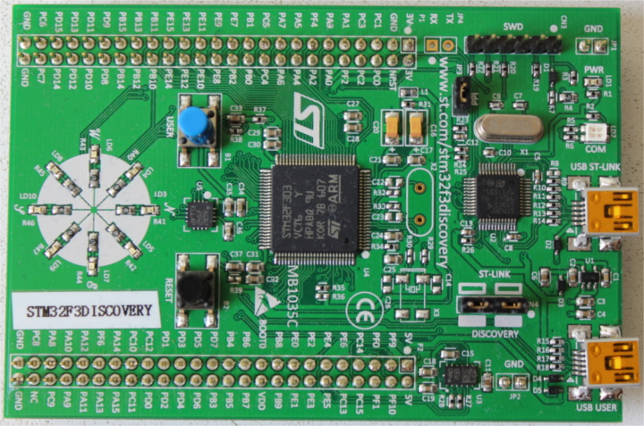

導入
The Embedded Rust Bookへようこそ。Rustをマイクロコントローラのような、「ベアメタル」の組込みシステムで使うための入門書です。
組込みRustは誰のためのもの
組込みRustは、Rustの高い抽象度と安全性のもと、組込みプログラミングをしたい人のためのものです。 (Rustは誰のためのものも合わせて見て下さい)
スコープ
この本の目的は、以下の通りです。
- 組込みRustをできる限り速く開始できるようにします。すなわち、開発環境のセットアップ方法です。
- 組込み開発におけるRustの現在のベストプラクティスを共有します。つまり、より正しい組込みソフトウェアを書くための、Rustの最善な利用方法です。
- いくつかのケースに対するマニュアルを提供します。例えば、1つのプロジェクト内で、C言語とRustとを混在する方法です。
本書は出来る限り一般的な事項を取り扱います。ただし、説明を簡単にするために、全ての例で、ARM Cortex-Mアーキテクチャを利用します。 読者は、このアーキテクチャに詳しい必要はありません。本書では、アーキテクチャ固有の詳細について、必要に応じて説明をします。
この本は誰のためのもの
本書は、組込み開発か、Rustかのバックグラウンドを持つ人々に向けたものです。しかし、組込みRustに興味がある人なら、誰でも、この本から何かを得られると思います。本書による学習効果を高めるために、事前知識が不足している読者は、「仮定と前提条件」のセクションを読み、不足している知識を補うことをお勧めします。不足知識を補うリソースを見つけるために、「その他のリソース」セクションをチェックすることができます。
仮定と前提条件
- Rustでのプログラミングを楽しんでおり、デスクトップ環境でRustアプリケーションを書いたり、実行したり、デバッグしたりしたことがあることを前提とします。また、本書ではRust 2018を対象とするため、2018 editionのイディオムに慣れ親しんでいる必要があります。
- C, C++, Adaといった言語で組込みシステムを開発、デバッグすることに慣れており、次の概念になじみがあることを想定します。
- クロスコンパイル
- メモリマップ方式のペリフェラル
- 割り込み
- I2C、SPI、シリアルといった一般的なインタフェース
その他のリソース
もしあなたが上述した何らかの事項をよく知らない場合、もしくは、本書内の特定トピックに関して、より詳細な情報を知りたい場合、これらのリソースが役に立つでしょう。
| トピック | リソース | 説明 |
|---|---|---|
| Rust | Rust Book 2018 Edition | もしRustに親しんでいない場合、この本を読むことを強くお勧めします。 |
| Rust、組込み | Embedded Rust Bookshelf | Rust組込みワーキンググループによるいくらかのリソースがあります。 |
| Rust、組込み | Embedonomicon | Rustで組込みプログラミングを行うときのより深い詳細が記載されています。 |
| Rust、組込み | embedded FAQ | 組込みでRustを使う際のよくある質問と回答です。 |
| 割り込み | Interrupt | - |
| メモリマップドI/O／ペリフェラル | Memory-mapped I/O | - |
| SPI, UART, RS232, USB, I2C, TTL | Stack Exchange about SPI, UART, and other interfaces | - |
この本はどう使う
この本は、前から順番に読んでいくことを想定しています。後半の章は、前半の章で説明する概念に基づいて成り立っています。前半の章では、トピックの詳細に深入りせず、後半の章で再訪問します。
この本は、ほとんどの例で、STマイクロエレクトロニクスのSTM32F3DISCOVERY開発ボードを使用します。このボードは、ARM Cortex-Mアーキテクチャをベースとしています。基本機能はこのアーキテクチャベースのCPUでは共通です。一方、ペリフェラルとマイクロコントローラ実装の詳細は、他のベンダーと異なります。同じSTマイクロエレクトロニクスのマイクロコントローラファミリでも、違いがあります。
上記の理由から、本書内の例を理解するために、STM32F3DISCOVERY開発ボードを購入することをお勧めします。
Rustのno_std環境
組込みプログラミングという用語は、様々な分野のプログラミングに使用されます。 たった数キロバイトのRAMかROMが付随する8ビットMCU (例えば、ST72325xx)から、32/64ビットの4コア Cortex-A53 @ 1.4GHzと1GBのRAMが搭載されたRaspberry Pi(Model B 3+)のようなシステムまで、幅広いです。 どのような種類の目的とユースケースがあるか、によって、コードを書くときに異なる制限/限界が課されます。
2つの一般的な組込みプログラミングの分類があります。
ホストされた環境
この分類の環境は、普通のPCの環境に近いです。 これの意味するところは、POSIXのようなシステムインタフェースが提供されている、ということです。システムインタフェースは、ファイルシステムやネットワーク、メモリ管理、スレッドといった多様なシステムとやりとりするための基本要素を提供します。 通常、標準ライブラリは、その機能を実装するために、これらの基本要素に依存します。 また、sysrootや、RAM/ROM利用の制限、そしておそらく特別なハードウェアやIOがあるかもしれません。 全体としては、特殊な用途のPC環境でコーディングをするようなものです。
ベアメタル環境
ベアメタル環境では、高機能なOSが動作していて、私たちのコードをホスティングしてくれる、ということはありません。
これは、基本要素がないことを意味しており、それ故に、デフォルトでは標準ライブラリもありません。
コードにno_stdのマーキングをすることで、そのコードが、ベアメタル環境で実行できることを示します。
no_stdなコードからは、Rustのlibstdとメモリの動的確保が使えません。
しかしながら、no_stdなコードでもlibcoreを使うことができます。libcoreは、ほんの数種類のシンボルを提供することで、いかなる環境でも容易に利用することができます (詳細は、libcoreを参照して下さい)。
libstdランタイム
上述の通り、libstdの利用には、いくらかのシステムインテグレーションが必要です。しかし、これはlibstdがOSの抽象にアクセスするための共通の方法を提供しているだけでなく、ランタイムも提供しているためです。
ランタイムは、とりわけ、スタックオーバーフロープロテクションの準備、コマンドライン引数の処理、メインスレッドの生成、をプログラムのメイン関数が呼び出される前に処理します。
このランタイムも、no_std環境では利用できません。
まとめ
#![no_std]は、クレートレベルの属性で、そのクレートがstdクレートの代わりにcoreクレートとリンクすることを意味します。
libcoreクレートは、プラットフォームに依存しないstdクレートのサブセットです。libcoreクレートは、プログラムが動作するシステムについて前提を置きません。
libcoreクレートは、浮動小数点、文字列やスライスといった言語の基本要素となるAPIと、アトミック操作やSIMD命令といったプロセッサの機能を公開するAPIとを、提供します。一方、プラットフォームインテグレーションを伴うようなAPIは欠如しています。
これらの特性のため、no_stdとlibcoreのコードは、ブートローダー、ファームウェア、カーネルといったあらゆるブートストラップ (ステージ0)のコードにも利用できます。
概略
| 機能 | no_std | std |
|---|---|---|
| ヒープ (動的メモリ) | * | ✓ |
| コレクション (Vec, HashMap, など) | ** | ✓ |
| スタックオーバーフロープロテクション | ✘ | ✓ |
| main関数前の初期化コード実行 | ✘ | ✓ |
| libstdの利用 | ✘ | ✓ |
| libcoreの利用 | ✓ | ✓ |
| ファームウェア、カーネル、ブートローダーのコードを書く | ✓ | ✘ |
* allocクレートを使い、[alloc-cortex-m]のような適切なアロケータを使った場合のみ
** collectionsクレートを使い、グローバルなデフォルトアロケータを設定した場合のみ
参照
ツール
マイクロコントローラを扱う際は、いくつかの異なるツールを利用することになります。あなたのノートPCとは異なるアーキテクチャを扱うことになるでしょうし、リモートデバイス上でプログラムを実行しデバッグする必要があります。
下記リストのツールを利用します。最小バージョンが指定されていない場合、新しいバージョンであれば機能するはずです。私たちがテストしたバージョンをリストに示しています。
- ARM Cortex-Mコンパイルサポートを追加したRust 1.31、1.31-beta以上のツールチェイン。
cargo-binutils~0.1.4qemu-system-arm。テストしたバージョン: 3.0.0- OpenOCD >=0.8.テストしたバージョン: v0.9.0とv0.10.0
- ARMサポートのGDB。バージョン7.12以上を強く推奨。テストしたバージョン: 7.10、7.11、7.12、8.1
- [任意]
gitまたはcargo-generate。どちらもインストールしていないのであれば、どちらをインストールしてもかまいません。
下記に、なぜこれらのツールを利用するのか、を説明します。インストール方法は、次のページにあります。
cargo-generateかgit
ベアメタルプログラムは、非標準 (no_std)なRustプログラムであり、プログラムのメモリレイアウトを正しくするために、リンクプロセスをいじる必要があります。
これには、独特なファイル(リンカスクリプトなど)と設定(リンカフラグ)が必要です。
プロジェクト名やターゲットハードウェアの特徴などを、空白に入力するだけで済むように、テンプレートを用意しています。
このテンプレートは、cargo-generateとの互換性があります。cargo-generateは、テンプレートからCargoプロジェクトを作成するためのCargoのサブコマンドです。
このテンプレートは、gitやcurl、wget、ウェブブラウザを使ってダウンロードできます。
cargo-binutils
cargo-binutilsは、Rustツールチェインとともに配布されているLLVMツールを簡単に使うためのCargoサブコマンド一式です。
これらのツールは、LLVMのobjdumpやnm、sizeを含んでおり、バイナリを調査するために使われます。
GNU binutilsではなく、これらのツールを利用する利点は次の通りです。
(a) LLVMツールのインストールは、OSに関わらず、共通のコマンド1つ(rustup component add llvm-tools-preview)で済みます。
(b) objdumpなどのツールは、rustcがサポートする全てのアーキテクチャ(ARMからx86_64まで)をサポートします。これは、同じLLVMバックエンドを共有しているためです。
qemu-system-arm
QEMUはエミュレータです。今回は、ARMシステムを完全にエミュレートできるものを使います。 私たちは、ホスト上で組込みプログラムを実行するためにQEMUを利用します。 このおかげで、ハードウェアを持っていなくても、この本のいくつかの部分を試すことができます。
GDB
デバッガは、組込み開発で非常に重要です。ホストコンソールにログを記録するような贅沢は、必ずしもできないからです。 場合によっては、ハードウェア上のLEDが点滅しないことがあります。
通常のデバッグ機能に関しては、LLDBはGDBと同様に機能します。しかし、ターゲットハードウェアにプログラムをアップロードするGDBのloadコマンド相当のものは、LLDBにはありません。
したがって、現在はGDBの使用をお勧めします。
OpenOCD
GDBは、STM32F3DISCOVERY開発ボード上のST-Linkデバッグハードウェアと直接通信することはできません。 翻訳プログラムが必要であり、OpenOCD (Open On-Chip Debugger)がその翻訳プログラムです。 OpenOCDは、ノートPCやPC上で動作するプログラムで、GDBのTCP/IPベースのリモートデバッグプロトコルとST-LinkのUSBベースのプロトコルとを翻訳します。
STM32F3DISCOVERY開発ボード上のARM Cortex-Mベースのマイクロコントローラをデバッグするため、OpenOCDは、翻訳の一環として、他の重要な役割も果たします。
- ARM CoreSightデバッグ周辺機器で使用されるメモリマップドレジスタとの通信方法を知っています。CoreSightレジスタは、次のことをできるようにします。
- ブレイクポイント/ウォッチポイント操作
- CPUレジスタの読み込みと書き込み
- CPUがデバッグイベントのために停止したことの検出
- デバッグイベントが発生した後のCPU実行の継続
- 他
- マイクロコントローラのフラッシュの消去と書き込み方法を知っています。
ツールのインストール
このページには、いくつかのツールのOSに依存しないインストール手順を掲載します。
Rustツールチェイン
https://rustup.rsの手順に従って、rustupをインストールします。
注意 コンパイラのバージョンが1.31以上であることを確認して下さい。rustc -vは下記に示す日付より新しい日付を返すべきです。
$ rustc -V
rustc 1.31.1 (b6c32da9b 2018-12-18)
バンド幅とディスク使用量に関する懸念から、デフォルトインストールではネイティブコンパイルのみをサポートします。 ARM Cortex-Mアーキテクチャのクロスコンパイラを追加するために、下記のコンパイルターゲットをインストールします。
$ rustup target add thumbv6m-none-eabi thumbv7m-none-eabi thumbv7em-none-eabi thumbv7em-none-eabihf
cargo-binutils
$ cargo install cargo-binutils
$ rustup component add llvm-tools-preview
OS特有の手順
使用しているOSに特有の手順に従って下さい。
Linux
いくつかのLinuxディストリビューションのインストールコマンドを示します。
Packages
- Ubuntu 18.04以上 / Debian stretch以降
注記 gdb-multiarchは、ARM Cortex-Mプログラムをデバッグするために使用するGDBのコマンドです。
$ sudo apt install \
gdb-multiarch \
openocd \
qemu-system-arm
- Ubuntu 14.04と16.04
注記 arm-none-eabi-gdbは、ARM Cortex-Mプログラムをデバッグするために使用するGDBのコマンドです。
$ sudo apt install \
gdb-arm-none-eabi \
openocd \
qemu-system-arm
- Fedora 27以上
注記 arm-none-eabi-gdbは、ARM Cortex-Mプログラムをデバッグするために使用するGDBのコマンドです。
$ sudo dnf install \
arm-none-eabi-gdb \
openocd \
qemu-system-arm
- Arch Linux
注記 arm-none-eabi-gdbは、ARM Cortex-Mプログラムをデバッグするために使用するGDBのコマンドです。
$ sudo pacman -S \
arm-none-eabi-gdb \
qemu-arch-extra
$ # install openocd from the AUR -- https://aur.archlinux.org/packages/openocd/
udevルール
このルールにより、ルート権限なしで、OpenOCDをDiscoveryボードに対して使えるようにします。
下記の内容で、/etc/udev/rules.dディレクトリにファイルを作成します。
$ cat /etc/udev/rules.d/70-st-link.rules
# STM32F3DISCOVERY rev A/B - ST-LINK/V2
ATTRS{idVendor}=="0483", ATTRS{idProduct}=="3748", TAG+="uaccess"
# STM32F3DISCOVERY rev C+ - ST-LINK/V2-1
ATTRS{idVendor}=="0483", ATTRS{idProduct}=="374b", TAG+="uaccess"
その後、全てのudevルールをリロードします。
$ sudo udevadm control --reload-rules
既にボードをノートPCに接続している場合、一度抜いてから、もう一度接続します。
これらのコマンド実行することで、パーミッションを確認できます。
$ lsusb
(..)
Bus 001 Device 018: ID 0483:374b STMicroelectronics ST-LINK/V2.1
(..)
バス番号とデバイス番号をメモします。それらの番号を、次のコマンドで使用します。
$ # the format of the path is /dev/bus/usb/<bus>/<device>
$ ls -l /dev/bus/usb/001/018
crw-------+ 1 root root 189, 17 Sep 13 12:34 /dev/bus/usb/001/018
$ getfacl /dev/bus/usb/001/018 | grep user
user::rw-
user:you:rw-
パーミッションに追加された+は、パーミッションが拡張されたことを意味しています。
それでは、次のセクションに進んで下さい。
macOS
全てのツールは、Homebrewを使ってインストールできます。
$ # GDB
$ brew tap armmbed/formulae
$ brew install armmbed/formulae/arm-none-eabi-gcc
$ # OpenOCD
$ brew install openocd
$ # QEMU
$ brew install qemu
以上です！次のセクションに進んで下さい。
Windows
arm-none-eabi-gdb
ARMはWindows向けに.exeインストーラを提供しています。hereから1つを入手して、手順に従って下さい。
インストールプロセスが終了する直前に"環境変数にパスを追加"オプションを選択します。
その後、ツールが%PATH%にあることを確認します。
$ arm-none-eabi-gdb -v
GNU gdb (GNU Tools for Arm Embedded Processors 7-2018-q2-update) 8.1.0.20180315-git
(..)
OpenOCD
There's no official binary release of OpenOCD for Windows but there are unofficial releases
available here. Grab the 0.10.x zipfile and extract it somewhere on your drive (I
recommend C:\OpenOCD but with the drive letter that makes sense to you) then update your %PATH%
environment variable to include the following path: C:\OpenOCD\bin (or the path that you used
before).
Windows用のOpenOCDの公式バイナリはありませんが、こちらの非公式なリリースが利用可能です。
0.10.xのzipファイルを入手し、ハードディスクのどこかに展開して下さい(C:\OpenOCDをお勧めしますが、あなたが分かるドライブ名を使用してください)。
その後、%PATH%環境変数がC:\OpenOCD\bin(もしくはあなたがOpenOCDのzipファイルを展開したパス)を含むように更新します。
OpenOCDが%PATH%にあることを確認します。
$ openocd -v
Open On-Chip Debugger 0.10.0
(..)
QEMU
QEMU公式サイトからQEMUを入手します。
ST-LINK USBドライバ
USBドライバもインストールする必要があります。そうでなければOpenOCDは動きません。インストーラの手順に従って下さい。 そして、正しいドライバのバージョン(32ビットか64ビット)をインストールすることを確認して下さい。
以上です！次のセクションに進んで下さい。
インストールの確認
このセクションでは、必要となるツールとドライバが正しくインストールされ、設定されていることを確認します。
マイクロUSBケーブルを使って、ノートPC / PCをdiscoveryボードに接続して下さい。 discoveryボードは2つのUSBコネクタを搭載しています。 ボード端の中央にある"USB ST-LINK"とラベルが付いたものを使用して下さい。
ST-LINKヘッダが装着されていることも確認します。下の写真の赤丸で囲った部分がST-LINKヘッダです。

それでは、次のコマンドを実行して下さい。
$ openocd -f interface/stlink-v2-1.cfg -f target/stm32f3x.cfg
次の出力が得られ、プログラムはコンソールをブロックするはずです。
Open On-Chip Debugger 0.10.0
Licensed under GNU GPL v2
For bug reports, read
http://openocd.org/doc/doxygen/bugs.html
Info : auto-selecting first available session transport "hla_swd". To override use 'transport select <transport>'.
adapter speed: 1000 kHz
adapter_nsrst_delay: 100
Info : The selected transport took over low-level target control. The results might differ compared to plain JTAG/SWD
none separate
Info : Unable to match requested speed 1000 kHz, using 950 kHz
Info : Unable to match requested speed 1000 kHz, using 950 kHz
Info : clock speed 950 kHz
Info : STLINK v2 JTAG v27 API v2 SWIM v15 VID 0x0483 PID 0x374B
Info : using stlink api v2
Info : Target voltage: 2.919881
Info : stm32f3x.cpu: hardware has 6 breakpoints, 4 watchpoints
確認作業とは直接関係しませんが、ブレイクポイントとウォッチポイントに関する最後の行を取得したはずです。 取得できた場合、OpenOCDプロセスを停止し、次のセクションへ進んで下さい。
"breakpoints"の行が取得できなかった場合、次のコマンドを試してく下さい。
$ openocd -f interface/stlink-v2.cfg -f target/stm32f3x.cfg
このコマンドが機能した場合、古いハードウェアリビジョンのdiscoveryボードを入手したことを意味します。 これは問題になりませんが、後で少し設定を変える必要があるので、そのことを覚えておいて下さい。 次のセクションに進むことができます。
どちらのコマンドも通常ユーザとしてうまく動かなかった場合、rootパーミッションで実行してみて下さい(例えば、sudo openocd ..)。
コマンドがrootパーミッションで機能した場合、udevルールが正しく設定されているか確認して下さい。
ここまで到着していまい、OpenOCDが動いていないならば、issueを作って下さい。私たちがあなたを支援します。
ハードウェアとの出会い
これから作業するハードウェアに詳しくなりましょう。
STM32F3DISCOVERY ("F3")

私たちは、本書内でこのボードを"F3"と呼びます。
このボードには何が搭載されているか見てみましょう。
- STM32F303VCT6マイクロコントローラが1つ。このマイクロコントローラは、次のものを搭載しています。
-
単精度浮動小数点演算をハードウェアサポートし、最大72MHzのクロック周波数で動作するシングルコアのARM Cortex-M4Fプロセッサ
-
256 KiBの"フラッシュ"メモリ (1 KiB = 1024 bytes)
-
48 KiBのRAM
-
多くの"ペリフェラル": タイマ、GPIO、I2C、SPI、USART、他
-
両側面の"ヘッダ"に配置された多数の"ピン"
-
重要 このマイクロコントローラは、約3.3ボルトで動作します。
-
- ジャイロセンサが1つ
- 円形に配置された8個のユーザLED
- 第2のマイクロコントローラ: STM32F103CBT。このマイクロコントローラは、実際には、ST-LINKというオンボードプログラマおよびデバッガの一部であり、"USB ST-LINK"という名前のUSBポートに接続されています。
- "USB USER"というラベルが付いている第2のUSBポート。このUSBポートは、メインマイクロコントローラ (STM32F303VCT6)に接続されており、アプリケーションで利用できます。
入門
このセクションでは、組込みプログラムを書いて、ビルドして、フラッシュに書き込み、デバッグする、という一連のプロセスを説明します。 ほとんどの例を特別なハードウェアなしで試すことができます。有名なオープンソースハードウェアエミュレータであるQEMUを使うからです。 ハードウェアが必要となる唯一のセクションは、当然ながら、OpenOCDを使ってSTM32F3DISCOVERYにプログラムするHardwareセクションです。
QEMU
Cortex-M3マイクロコントローラのLM3S6965用にプログラムを書くところから始めましょう。 このLM3S6965を最初のターゲットとして選んだ理由は、QEMUを使ってエミュレーションできるからです。 このセクションでは、ハードウェアをいじる必要がなく、ツールと開発プロセスに集中できます。
標準ライブラリを使わないRustプログラム
cortex-m-quickstartプロジェクトテンプレートを使用し、新しいプロジェクトを生成します。
cargo-generateを利用する場合
$ cargo generate --git https://github.com/rust-embedded/cortex-m-quickstart
Project Name: app
Creating project called `app`...
Done! New project created /tmp/app
$ cd app
gitを利用する場合
レポジトリをクローンします。
$ git clone https://github.com/rust-embedded/cortex-m-quickstart app
$ cd app
Cargo.tomlのプレースホルダを埋めます。
$ cat Cargo.toml
[package]
authors = ["{{authors}}"] # "{{authors}}" -> "John Smith"
edition = "2018"
name = "{{project-name}}" # "{{project-name}}" -> "awesome-app"
version = "0.1.0"
# ..
[[bin]]
name = "{{project-name}}" # "{{project-name}}" -> "awesome-app"
test = false
bench = false
- どちらも使わない場合
cortex-m-quickstartテンプレートの最新スナップショットを入手し、展開します。
コマンドラインを利用する場合:
$ # 注記 tar形式でも入手可能です: archive/master.tar.gz
$ curl -LO https://github.com/rust-embedded/cortex-m-quickstart/archive/master.zip
$ unzip master.zip
$ mv cortex-m-quickstart-master app
$ cd app
もしくは、cortex-m-quickstartをウェブブラウザで開いて、緑色の「Clone or download」ボタンをクリックして、
「Download ZIP」をクリックします。
次に、Cargo.tomlファイルのプレースホルダを「gitを利用する場合」の2つ目のパートにある通り埋めます。
重要 このチュートリアルでは、「app」という名前をプロジェクト名に使います。 「app」という単語が出てきた場合、それをあなたのプロジェクトにつけた名前に置き替えなければなりません。 または、プロジェクトに「app」という名前をつけると、置き替える必要がなくなります。
これは、src/main.rsのソースコードです。
$ cat src/main.rs
#![no_std] #![no_main] // pick a panicking behavior // パニック発生時の挙動を選びます // extern crate panic_halt; // you can put a breakpoint on `rust_begin_unwind` to catch panics extern crate panic_halt; // パニックをキャッチするため、`rust_begin_unwind`にブレイクポイントを設定できます // extern crate panic_abort; // requires nightly // extern crate panic_abort; // nightlyが必要です // extern crate panic_itm; // logs messages over ITM; requires ITM support // extern crate panic_itm; // ITMを介してメッセージをログ出力します; ITMサポートが必要です // extern crate panic_semihosting; // logs messages to the host stderr; requires a debugger // extern crate panic_semihosting; // ホストの標準エラーにメッセージをログ出力します; デバッガが必要です。 use cortex_m_rt::entry; #[entry] fn main() -> ! { loop { // your code goes here // あなたのコードはここに書きます } }
このプログラムは、標準的なRustプログラムとは少し異なりますので、もう少し詳しく見てみましょう。
#![no_std]はこのプログラムが、標準クレートであるstdにリンクしないことを意味します。
代わりに、そのサブセットであるcoreクレートにリンクします。
#![no_main]は、ほとんどのRustプログラムが使用する標準のmainインタフェースを、
このプログラムでは使用しないことを示します。
no_mainを利用する主な理由は、no_stdの状況でmainインタフェースを使用するにはnightlyが必要だからです。
extern crate panic_halt;。このクレートは、プログラムのパニック発生時の挙動を定義するpanic_handlerを提供します。
後ほど、より詳しく説明します。
[#[entry]]は、cortex-m-rtクレートが提供するアトリビュートで、プログラムのエントリポイントを示すために使用します。
標準のmainインタフェースを使用しないので、プログラムのエントリポイントを示す別の方法が必要です。それが、#[entry]です。
[#[entry]]: https://docs.rs/cortex-m-rt-macros/latest/cortex_m_rt_macros/attr.entry.html
fn main() -> !。ターゲットハードウェア上で動作しているのは私たちのプログラムだけなので、
終了させたくありません。
コンパイル時、確実にそうなるように、発散する関数を使います（関数シグネチャの-> !部分）。
クロスコンパイル
次のステップは、プログラムをCortex-M3アーキテクチャ向けにクロスコンパイルすることです。
これはコンパイルターゲット（$TRIPLE）が何かわかっていれば、cargo build --target $TRIPLEを実行するだけで簡単にできます。
コンパイルターゲットが何かは、テンプレート中の.cargo/configを見ればわかります。
$ tail -n6 .cargo/config
[build]
# 以下のコンパイルターゲットから1つを選びます
# target = "thumbv6m-none-eabi" # Cortex-M0およびCortex-M0+
target = "thumbv7m-none-eabi" # Cortex-M3
# target = "thumbv7em-none-eabi" # Cortex-M4およびCortex-M7 (no FPU)
# target = "thumbv7em-none-eabihf" # Cortex-M4FおよびCortex-M7F (with FPU)
Cortex-M3アーキテクチャ向けにクロスコンパイルするためには、thumbv7m-none-eabiを使う必要があります。
このコンパイルターゲットは、デフォルトとして設定されているため、下記2つのコマンドは同じ意味になります。
$ cargo build --target thumbv7m-none-eabi
$ cargo build
確認
今、target/thumbv7m-none-eabi/debug/appに、非ネイティブなバイナリがあります。
cargo-binutilsを使って、このバイナリを確認することができます。
このバイナリがARMバイナリであることを確かめるために、cargo-readobjでELFヘッダを表示できます。
$ # `--bin app`は`target/$TRIPLE/debug/app`のバイナリを確認するためのシンタックスシュガーです
$ # `--bin app`は必要に応じて、バイナリを（再）コンパイルもします
$ cargo readobj --bin app -- -file-headers
ELF Header:
Magic: 7f 45 4c 46 01 01 01 00 00 00 00 00 00 00 00 00
Class: ELF32
Data: 2's complement, little endian
Version: 1 (current)
OS/ABI: UNIX - System V
ABI Version: 0x0
Type: EXEC (Executable file)
Machine: ARM
Version: 0x1
Entry point address: 0x405
Start of program headers: 52 (bytes into file)
Start of section headers: 153204 (bytes into file)
Flags: 0x5000200
Size of this header: 52 (bytes)
Size of program headers: 32 (bytes)
Number of program headers: 2
Size of section headers: 40 (bytes)
Number of section headers: 19
Section header string table index: 18
cargo-sizeはバイナリのリンカセクションのサイズを表示できます。
注記 この出力は、rust-embedded/cortex-m-rt#111がマージされていることを前提とします
$ # 最適化されたバイナリを確認するために`--release`を使います。
$ cargo size --bin app --release -- -A
app :
section size addr
.vector_table 1024 0x0
.text 92 0x400
.rodata 0 0x45c
.data 0 0x20000000
.bss 0 0x20000000
.debug_str 2958 0x0
.debug_loc 19 0x0
.debug_abbrev 567 0x0
.debug_info 4929 0x0
.debug_ranges 40 0x0
.debug_macinfo 1 0x0
.debug_pubnames 2035 0x0
.debug_pubtypes 1892 0x0
.ARM.attributes 46 0x0
.debug_frame 100 0x0
.debug_line 867 0x0
Total 14570
ELFリンカセクションの補足
.textは、プログラムの実行コードを含んでいます.rodataは、文字列のような定数を含んでいます.dataは、初期値が0ではない静的に割り当てられた変数が格納されています.bssも静的に割り当てられた変数が格納されますが、その初期値は0です.vector_tableは、非標準のセクションです。（割り込み）ベクタテーブルを格納するために使用します.ARM.attributesと.debug_*セクションはメタデータを含んでおり、バイナリをフラッシュに書き込む際、 ターゲットボード上にロードされません
重要: ELFファイルは、デバッグ情報といったメタデータを含んでいるため、そのディスク上のサイズは、
プログラムがデバイスに書き込まれた時に専有するスペースを正確に反映していません。
実際のバイナリサイズを確認するために、常にcargo-sizeを使用して下さい。
cargo-objdumpは、バイナリをディスアセンブルするために使用できます。
$ cargo objdump --bin app --release -- -disassemble -no-show-raw-insn -print-imm-hex
注記 この出力は、rust-embedded/cortex-m-rt#111がマージされていることを前提とします
app: file format ELF32-arm-little
Disassembly of section .text:
Reset:
400: bl #0x36
404: movw r0, #0x0
408: movw r1, #0x0
40c: movt r0, #0x2000
410: movt r1, #0x2000
414: bl #0x2c
418: movw r0, #0x0
41c: movw r1, #0x45c
420: movw r2, #0x0
424: movt r0, #0x2000
428: movt r1, #0x0
42c: movt r2, #0x2000
430: bl #0x1c
434: b #-0x4 <Reset+0x34>
HardFault_:
436: b #-0x4 <HardFault_>
UsageFault:
438: b #-0x4 <UsageFault>
__pre_init:
43a: bx lr
HardFault:
43c: mrs r0, msp
440: bl #-0xe
__zero_bss:
444: movs r2, #0x0
446: b #0x0 <__zero_bss+0x6>
448: stm r0!, {r2}
44a: cmp r0, r1
44c: blo #-0x8 <__zero_bss+0x4>
44e: bx lr
__init_data:
450: b #0x2 <__init_data+0x6>
452: ldm r1!, {r3}
454: stm r0!, {r3}
456: cmp r0, r2
458: blo #-0xa <__init_data+0x2>
45a: bx lr
実行
次は、QEMUで組込みプログラムを実行する方法を見ていきましょう。
今回は、実際に何かを行うhelloの例を使います。
便宜上のsrc/main.rsのソースコードです:
$ cat examples/hello.rs
//! Prints "Hello, world!" on the host console using semihosting //! セミホスティングを使って"Hello, world!"をホストのコンソールに表示します #![no_main] #![no_std] extern crate panic_halt; use core::fmt::Write; use cortex_m_rt::entry; use cortex_m_semihosting::{debug, hio}; #[entry] fn main() -> ! { let mut stdout = hio::hstdout().unwrap(); writeln!(stdout, "Hello, world!").unwrap(); // exit QEMU or the debugger section // QEMUもしくはデバッガセッションを終了します debug::exit(debug::EXIT_SUCCESS); loop {} }
このプログラムは、ホストコンソールにテキストを表示するために、セミホスティングと呼ばれるものを使います。 実際のハードウェアを使用する場合、セミホスティングはデバッグセッションを必要としますが、 QEMUを使う場合、これで機能します。
例をコンパイルすることから始めましょう。
$ cargo build --example hello
target/thumbv7m-none-eabi/debug/examples/helloに出力バイナリがあります。
QEMU上でこのバイナリを動かすために、次のコマンドを実行して下さい。
$ qemu-system-arm \
-cpu cortex-m3 \
-machine lm3s6965evb \
-nographic \
-semihosting-config enable=on,target=native \
-kernel target/thumbv7m-none-eabi/debug/examples/hello
Hello, world!
上記コマンドは、テキストを表示したあと、正常終了（終了コードが0）するはずです。 *nixでは、次のコマンドで正常終了したことを確認できます。
$ echo $?
0
この長いQEMUコマンドを分解して説明します。
qemu-system-arm。これはQEMUエミュレータです。QEMUにはいくつかのバイナリがあります。 このバイナリは、ARMマシンのフルシステムをエミュレーションするので、この名前になっています。
-cpu cortex-m3。QEMUに、Cortex-M3 CPUをエミュレーションするように伝えます。 CPUモデルを指定すると、いくつかのコンパイルミスのエラーを検出できます。例えば、 ハードウェアFPUを搭載しているCortex-M4F用にコンパイルしたプログラムを実行すると、 実行中にQEMUがエラーを発生させるでしょう。
-machine lm3s6965evb。QEMUに、LM3S6965EVBをエミュレーションするように伝えます。 LM3S6965EVBは、LM3S6965マイクロコントローラを搭載している評価ボードです。
-nographic。QEMUがGUIを起動しないようにします。
-semihosting-config (..)。QEMUのセミホスティングを有効にします。セミホスティングにより、 エミュレーションされたデバイスは、ホストの標準出力、標準エラー、標準入力を使用できるようになり、 ホスト上にファイルを作成することができます。
-kernel $file。QEMUに、エミュレーションしたマシン上にロードして、実行するバイナリを教えます。
この長いQEMUコマンドを入力するのは大変過ぎます。このプロセスを簡略化するために、
カスタムランナーを設定できます。.cargo/configには、QEMUを起動するランナーが、
コメントアウトされた状態であります。コメントアウトを外して下さい。
$ head -n3 .cargo/config
[target.thumbv7m-none-eabi]
# `cargo run`で、プログラムをQEMUで実行するため、コメントアウトを外して下さい。
runner = "qemu-system-arm -cpu cortex-m3 -machine lm3s6965evb -nographic -semihosting-config enable=on,target=native -kernel"
このランナーは、デフォルトのコンパイルターゲットであるthumbv7m-none-eabiのみに適用されます。
これで、cargo runはプログラムをコンパイルしてQEMUで実行します。
$ cargo run --example hello --release
Compiling app v0.1.0 (file:///tmp/app)
Finished release [optimized + debuginfo] target(s) in 0.26s
Running `qemu-system-arm -cpu cortex-m3 -machine lm3s6965evb -nographic -semihosting-config enable=on,target=native -kernel target/thumbv7m-none-eabi/release/examples/hello`
Hello, world!
デバッグ
デバッグは組込み開発にとって非常に重要です。どのように行うのか、見てみましょう。
組込みデバイスのデバッグは、リモートデバッグを伴います。デバッグしたいプログラムは、 デバッガプログラム（GDBまたはLLDB）を実行しているマシン上で実行されないためです。
リモートデバッグは、クライアントとサーバからなります。QEMUのセットアップで、 クライアントはGDB（またはLLDB）プロセスとなり、サーバは組込みプログラムを実行しているQEMUプロセスとなります。
このセクションでは、コンパイル済みのhelloの例を使用します。
最初のデバッグステップは、QEMUをデバッグモードで起動することです。
$ qemu-system-arm \
-cpu cortex-m3 \
-machine lm3s6965evb \
-nographic \
-semihosting-config enable=on,target=native \
-gdb tcp::3333 \
-S \
-kernel target/thumbv7m-none-eabi/debug/examples/hello
このコマンドは、コンソールに何も表示せず、端末をブロックします。 ここでは2つの追加フラグを渡しています。
-gdb tcp::3333。QEMUがTCPポート3333番で、GDBコネクションを待つようにします。
-S。QEMUが、起動時に、マシンをフリーズします。このフラグがないと、 デバッガを起動する前に、プログラムがmain関数の終わりに到達してしまいます。
次に別の端末でGDBを起動し、helloの例のデバッグシンボルをロードします。
$ <gdb> -q target/thumbv7m-none-eabi/debug/examples/hello
注記: <gdb>はARMバイナリをデバッグ可能なGDBを意味します。
あなたが利用しているシステムに依存して、arm-none-eabi-gdbか、gdb-multiarch、gdbになります。
3つ全てを試してみる必要があるかもしれません。
すると、GDBシェルは、TCPポート3333番で接続を待っていたQEMUに接続します。
(gdb) target remote :3333
Remote debugging using :3333
Reset () at $REGISTRY/cortex-m-rt-0.6.1/src/lib.rs:473
473 pub unsafe extern "C" fn Reset() -> ! {
プロセスは停止しており、プログラムカウンタがResetという名前の関数を指していることがわかります。
Reset関数は、Cortex-Mコアが起動時に実行するリセットハンドラです。
このリセットハンドラは、最終的に、私たちのメイン関数を呼び出します。
ブレイクポイントとcontinueコマンドを使って、メイン関数呼び出しまでスキップしましょう。
(gdb) break main
Breakpoint 1 at 0x400: file examples/panic.rs, line 29.
(gdb) continue
Continuing.
Breakpoint 1, main () at examples/hello.rs:17
17 let mut stdout = hio::hstdout().unwrap();
「Hello, world!」を表示するコードに近づいてきました。
nextコマンドを使って、先へ進みましょう。
(gdb) next
18 writeln!(stdout, "Hello, world!").unwrap();
(gdb) next
20 debug::exit(debug::EXIT_SUCCESS);
この時点で、qemu-system-armを実行している端末に「Hello, world」が表示されるはずです。
$ qemu-system-arm (..)
Hello, world!
もう1度nextを実行すると、QEMUプロセスが終了します。
(gdb) next
[Inferior 1 (Remote target) exited normally]
これでGDBセッションを終了できます。
(gdb) quit
ハードウェア
ここまでで、ツールと開発プロセスにある程度慣れたはずです。このセクションでは、実際のハードウェアに切り替えます。 開発プロセスは、ほとんど同じままです。飛び込みましょう。
ハードウェアを知る
始める前に、プロジェクトの設定に利用するターゲットデバイスのいくつかの特徴を確認する必要があります。
- ARMコア、例えばCortex-M3です。
- そのARMコアはFPUを搭載していますか？Cortex-M4FとCortex-M7Fは、搭載しています。
- ターゲットデバイスに搭載されているフラッシュメモリとRAMの容量はいくらですか？ 例えば、フラッシュは256KiBでRAMは32KiBです。
- フラッシュメモリとRAMは、アドレス空間のどこにマッピングされていますか？
例えば、RAMは、通常
0x2000_0000番地に位置します。
これらの情報は、デバイスのデータシートかリファレンスマニュアルに掲載されています。
このセクションでは、私たちのリファレンスハードウェアであるSTM32F3DISCOVERYを使用します。 このボードは、STM32F303VCT6マイクロコントローラを1つ搭載しています。このマイクロコントローラは以下のものを持っています。
- 単精度FPUを含むCortex-M4Fコアが1つ
- 0x0800_0000番地に配置された256KiBのフラッシュメモリ
- 0x2000_0000番地に配置された40KiBのRAM。（別のRAM領域もありますが、説明の簡単化のため、取り扱いません）
設定
テンプレートの新しいインスタンスを使って、スクラッチから書いていきましょう。
cargo-generateを使用しない方法については、前セクションのQEMUを参照して下さい。
$ cargo generate --git https://github.com/rust-embedded/cortex-m-quickstart
Project Name: app
Creating project called `app`...
Done! New project created /tmp/app
$ cd app
第一ステップは、.cargo/configにデフォルトコンパイルターゲットを設定することです。
$ tail -n5 .cargo/config
[build]
# 以下のコンパイルターゲットから1つを選びます
# target = "thumbv6m-none-eabi" # Cortex-M0およびCortex-M0+
# target = "thumbv7m-none-eabi" # Cortex-M3
# target = "thumbv7em-none-eabi" # Cortex-M4およびCortex-M7 (no FPU)
target = "thumbv7em-none-eabihf" # Cortex-M4FおよびCortex-M7F (with FPU)
Cortex-M4Fコアを対象とするものとして、thumbv7em-none-eabihfを使います。
第二ステップは、memory.xファイルにメモリ領域の情報を入力することです。
$ cat memory.x
/* STM32F303VCT6用のリンカスクリプト */
MEMORY
{
/* 注記 1 K = 1 KiBi = 1024バイト */
FLASH : ORIGIN = 0x08000000, LENGTH = 256K
RAM : ORIGIN = 0x20000000, LENGTH = 40K
}
debug::exit()の呼び出しが、コメントアウトされているか削除されていることを確認して下さい。
これは、QEMUで実行する時のみ、使用します。
#[entry] fn main() -> ! { hprintln!("Hello, world!").unwrap(); // exit QEMU // NOTE do not run this on hardware; it can corrupt OpenOCD state // debug::exit(debug::EXIT_SUCCESS); // QEMUを終了する // 注記、ハードウェア上で実行しないで下さい。OpenOCDの状態を破壊する可能性があります。 // debug::exit(debug::EXIT_SUCCESS); loop {} }
これまでやってきた通り、cargo buildでプログラムをクロスコンパイルし、
cargo-binutilsでバイナリを調べることができます。
cortex-m-rtクレートは、チップを動作させるために必要な、全てのおまじないを処理します。
便利なことに、ほとんど全てのCortex-M CPUが同じ方法で起動します。
$ cargo build --example hello
デバッグ
デバッグ方法は少し違います。実際、最初のステップは、ターゲットデバイスによって異なります。 このセクションでは、STM32F3DISCOVERY上で実行しているプログラムをデバッグするために必要となる手順を説明します。 これは、参考の役目を果たします。デバイス固有のデバッグ情報は、 the Debugonomiconを参照して下さい。
以前と同様に、リモートデバッグを行います。クライアントがGDBプロセスであることも同様です。 しかし、今回、サーバはOpenOCDになります。
インストールの確認セクションでやったように、ノートPCまたはPCをdiscoveryボードに接続し、 ST-LINKヘッダが設定されていることを確認して下さい。
discoveryボードのST-LINKに接続するために、端末でopenocdを実行して下さい。
このコマンドは、テンプレートプロジェクトのルートディレクトリから実行して下さい。
openocdは、どのインタフェースファイルとターゲットファイルを使うか、が記述されているopenocd.cfgファイルを見つけます。
$ cat openocd.cfg
# STM32F3DISCOVERY開発ボード用のOpenOCD設定サンプル
# 持っているハードウェアのリビジョンに応じて、これらのインタフェースのうち、1つを選んで下さい。
# 常に、1つのインタフェースがコメントアウトされているべきです。
# Revision C (newer revision)
# リビジョンC （新しいリビジョン）
source [find interface/stlink-v2-1.cfg]
# リビジョンAとB（古いリビジョン）
# source [find interface/stlink-v2.cfg]
source [find target/stm32f3x.cfg]
注記 インストールの確認セクションで、古いバージョンのdiscoveryボードを持っていることが判明している場合、
interface/stlink-v2.cfgを使うようにopenocd.cfgファイルを修正する必要があります。
$ openocd
Open On-Chip Debugger 0.10.0
Licensed under GNU GPL v2
For bug reports, read
http://openocd.org/doc/doxygen/bugs.html
Info : auto-selecting first available session transport "hla_swd". To override use 'transport select <transport>'.
adapter speed: 1000 kHz
adapter_nsrst_delay: 100
Info : The selected transport took over low-level target control. The results might differ compared to plain JTAG/SWD
none separate
Info : Unable to match requested speed 1000 kHz, using 950 kHz
Info : Unable to match requested speed 1000 kHz, using 950 kHz
Info : clock speed 950 kHz
Info : STLINK v2 JTAG v27 API v2 SWIM v15 VID 0x0483 PID 0x374B
Info : using stlink api v2
Info : Target voltage: 2.913879
Info : stm32f3x.cpu: hardware has 6 breakpoints, 4 watchpoints
別の端末で、GDBを実行します。こちらも、テンプレートプロジェクトのルートディレクトから実行して下さい。
$ <gdb> -q target/thumbv7em-none-eabihf/debug/examples/hello
次に、TCP 3333ポートで接続待ちしているOpenOCDに、GDBを接続します。
(gdb) target remote :3333
Remote debugging using :3333
0x00000000 in ?? ()
それでは、loadコマンドを使って、マイクロコントローラにプログラムを書き込んで下さい。
(gdb) load
Loading section .vector_table, size 0x400 lma 0x8000000
Loading section .text, size 0x1e70 lma 0x8000400
Loading section .rodata, size 0x61c lma 0x8002270
Start address 0x800144e, load size 10380
Transfer rate: 17 KB/sec, 3460 bytes/write.
プログラムがロードされました。このプログラムはセミホスティングを使用します。そこで、 セミホスティングを呼び出して何かを行う前に、OpenOCDにセミホスティングを有効にするように、 指示する必要があります。
(gdb) monitor arm semihosting enable
semihosting is enabled
monitor helpコマンドを実行することで、全てのOpenOCDコマンドを見ることができます。
以前のように、ブレイクポイントとcontinueコマンドを使用することで、mainまでスキップすることができます。
(gdb) break main
Breakpoint 1 at 0x8000d18: file examples/hello.rs, line 15.
(gdb) continue
Continuing.
Note: automatically using hardware breakpoints for read-only addresses.
Breakpoint 1, main () at examples/hello.rs:15
15 let mut stdout = hio::hstdout().unwrap();
nextでプログラムを先に進めると、以前と同じ結果になるはずです。
(gdb) next
16 writeln!(stdout, "Hello, world!").unwrap();
(gdb) next
19 debug::exit(debug::EXIT_SUCCESS);
この時点で、OpenOCDコンソールに、他のものと入り混じって「Hello, world!」と表示されるはずです。
$ openocd
(..)
Info : halted: PC: 0x08000e6c
Hello, world!
Info : halted: PC: 0x08000d62
Info : halted: PC: 0x08000d64
Info : halted: PC: 0x08000d66
Info : halted: PC: 0x08000d6a
Info : halted: PC: 0x08000a0c
Info : halted: PC: 0x08000d70
Info : halted: PC: 0x08000d72
もう一度nextを実行して、プロセッサにdebug::exitを実行させます。
これはブレイクポイントとして動作し、プロセスを停止します。
(gdb) next
Program received signal SIGTRAP, Trace/breakpoint trap.
0x0800141a in __syscall ()
また、OpenOCDコンソールに次のものが表示されます。
$ openocd
(..)
Info : halted: PC: 0x08001188
semihosting: *** application exited ***
Warn : target not halted
Warn : target not halted
target halted due to breakpoint, current mode: Thread
xPSR: 0x21000000 pc: 0x08000d76 msp: 0x20009fc0, semihosting
しかし、マイクロコントローラ上で動作しているプロセスは終了していないため、
continueもしくは同様のコマンドを使って、プログラムを再開することができます。
ここで、quitコマンドを使うことで、GDBを終了できます。
(gdb) quit
デバッグにはもう少しステップが必要なので、これらのステップをopenocd.gdbというGDBスクリプトにまとめました。
$ cat openocd.gdb
target remote :3333
# デマングルされたシンボルを表示します
set print asm-demangle on
# 未処理の例外、ハードフォールト、パニックを検出します
break DefaultHandler
break HardFault
break rust_begin_unwind
monitor arm semihosting enable
load
# プロセスを開始しますが、すぐにプロセッサを停止します
stepi
<gdb> -x openocd.gdb $programを実行することで、GDBはすぐにOpenOCDに接続し、
セミホスティングを有効化し、プログラムをロードした上で、プロセスを開始します。
別の方法として、<gdb> -x openocd.gdbをカスタムランナーにして、cargo runでプログラムをビルドし、
さらにGDBセッションを開始することもできます。このランナーは、.cargo/configに含まれていますが、
コメントアウトされています。
$ head -n10 .cargo/config
[target.thumbv7m-none-eabi]
# ここのコメントアウトを外すと、`cargo run`はQEMUでプログラムを実行します
# runner = "qemu-system-arm -cpu cortex-m3 -machine lm3s6965evb -nographic -semihosting-config enable=on,target=native -kernel"
[target.'cfg(all(target_arch = "arm", target_os = "none"))']
# 3つの選択肢のうち、1つのコメントアウトを外すと、`cargo run`はGDBセッションを開始します。
# どの選択肢を使うか、は対象システムによって異なります。
runner = "arm-none-eabi-gdb -x openocd.gdb"
# runner = "gdb-multiarch -x openocd.gdb"
# runner = "gdb -x openocd.gdb"
$ cargo run --example hello
(..)
Loading section .vector_table, size 0x400 lma 0x8000000
Loading section .text, size 0x1e70 lma 0x8000400
Loading section .rodata, size 0x61c lma 0x8002270
Start address 0x800144e, load size 10380
Transfer rate: 17 KB/sec, 3460 bytes/write.
(gdb)
メモリマップドレジスタ
組込みシステムでは、通常のRustコードを実行し、データをRAM内で移動させるだけではたいしたことはできません。 LEDの点滅やボタンの押下検出、もしくは、バス上のオフチップペリフェラルとの通信など、 システムが情報を入出力するには、ペリフェラルとその「メモリマップドレジスタ」の世界に足を踏み入れる必要があります。
マイクロコントローラのペリフェラルにアクセスするためのコードが、次のいずれかのレベルで、既に書かれています。
- マイクロアーキテクチャクレート。この種のクレートは、マイクロコントローラに搭載されているプロセッサコアで共通となる便利なルーチンを扱っています。 また、特定のプロセッサコアを使用する全てのマイクロコントローラに共通のペリフェラルも取り扱います。 例えば、cortex-mクレートは、割り込みの有効化と無効化を行う関数を提供しています。これは全てのCortex-Mベースマイクロコントローラで同じものです。 cortex-mクレートは、「SysTick」ペリフェラルへのアクセスも提供しています。このペリフェラルは、全てのCortex-Mベースマイクロコントローラに搭載されています。
- ペリフェラルアクセスクレート（PAC）。この種のクレートは、薄いラッパーです。特定の型番のマイクロコントローラに対して定義されている、 様々なメモリマップドレジスタのラッパーを提供します。例えば、テキサスインスツルメンツのTiva-C TM4C123シリーズ向けのtm4c123xクレートや、 STマイクロのSTM32F30xシリーズ向けのstm32f30xクレートです。マイクロコントローラのテクニカルリファレンスマニュアルに記載されている各ペリフェラルの操作手順に従って、 レジスタと直接やり取りします。
- HALクレート。これらのクレートは、特定のプロセッサに対して、よりユーザフレンドリなAPIを提供しています。embedded-halで定義されている共通のトレイトを使って実装されていることが多いです。
例えば、このクレートは、
Serial構造体を提供しているでしょう。そのコンストラクタは、適切なGPIOピンの一式とボーレートを引数に取ります。そして、データを送信するためのwrite_byte関数一式を提供します。 embedded-halに関する詳細は、移植性の章を参照して下さい。
- ボードクレート。これらのクレートは、HALクレートのさらに一歩先を進んでいます。これらは、STM32F3DISCOVERYボード向けのF3のように、 特定の開発キットやボード向けに、様々なペリフェラルとGPIOピンを事前に設定してあります。
最下層から始める
全てのCortex-Mマイクロコントローラで共通のSysTickペリフェラルから見ていきましょう。 cortex-mクレートにはかなり低レベルなAPIがあり、次のように使うことができます。
use cortex_m::peripheral::{syst, Peripherals}; use cortex_m_rt::entry; #[entry] fn main() -> ! { let mut peripherals = Peripherals::take().unwrap(); let mut systick = peripherals.SYST; systick.set_clock_source(syst::SystClkSource::Core); systick.set_reload(1_000); systick.clear_current(); systick.enable_counter(); while !systick.has_wrapped() { // Loop // ループ } loop {} }
SYST構造体の関数は、ARMテクニカルリファレンスマニュアルにおいて、このペリフェラルに定義されている機能と非常によく似ています。
「Xミリ秒遅延」といった具合のAPIはありません。whileループを使って愚直に実装する必要があります。Peripherals::take()を呼び出すまでは、
SYST構造体にアクセスできないことに注意して下さい。これは、プログラム全体で唯一のSYST構造体が存在することを保証する特別な手順です。
詳しくは、ペリフェラルセクションをご覧下さい。
ペリフェラルアクセスクレート（PAC）の使用
全てのCortex−Mに搭載されている基本的なペリフェラルのみに限定するのであれば、組込みソフトウェア開発はあまり進まないでしょう。 どこかの時点で、使用している特定のマイクロコントローラ固有のコードを書く必要があります。今回の例では、テキサスインスツルメンツのTM4C123があるとしましょう。 TM4C123はミドルレンジのマイクロコントローラで、80MHzのCortex-M4と256 KiBのフラッシュメモリが搭載されています。 このチップを利用するために、tm4c123xクレートを取得します。
#![no_std]
#![no_main]
// extern crate panic_halt; // panic handler
extern crate panic_halt; // パニックハンドラ
use cortex_m_rt::entry;
use tm4c123x;
#[entry]
pub fn init() -> (Delay, Leds) {
let cp = cortex_m::Peripherals::take().unwrap();
let p = tm4c123x::Peripherals::take().unwrap();
let pwm = p.PWM0;
pwm.ctl.write(|w| w.globalsync0().clear_bit());
// Mode = 1 => Count up/down mode
// モード1は カウントアップ/ダウンモード
pwm._2_ctl.write(|w| w.enable().set_bit().mode().set_bit());
pwm._2_gena.write(|w| w.actcmpau().zero().actcmpad().one());
// 528 cycles (264 up and down) = 4 loops per video line (2112 cycles)
// 528サイクル（264カウントアップとカウントダウン）は、ビデオラインごとに4ループ（2112サイクル）
pwm._2_load.write(|w| unsafe { w.load().bits(263) });
pwm._2_cmpa.write(|w| unsafe { w.compa().bits(64) });
pwm.enable.write(|w| w.pwm4en().set_bit());
}
先ほどSYSTにアクセスした時と全く同じ方法で、PWM0ペリフェラルにアクセスします。違う点は、tm4c123x::Peripherals::take()を呼ぶことです。
このクレートは、svd2rustを使って自動生成されたものです。レジスタフィールドのアクセス関数は、数値の引数ではなく、クロージャを取ります。
このコードは量が多いように見えますが、Rustコンパイラは一連のチェックを実行し、手書きのアセンブラに近いマシンコードを生成します。
自動生成されたコードが、特定のアクセサ関数への全引数が有効であることを判断できない場合、その関数はunsafeとマークされます。
例えば、SVDがレジスタを32ビットと定義しているが、それらの32ビット値の一部が特別な意味を持つかどうか、記述していない場合です。
上記の例では、bits()関数を使ってloadとcompaサブフィールドを設定する時に、unsafeをマークしています。
読み込み
read()関数は、メーカーのSVDファイルで定義されている通り、レジスタ内の様々なサブフィールドに対して、読み込み専用のアクセスオブジェクトを返します。
特定チップ上にある、特定ペリフェラルの、特定レジスタに対して、固有の返り値R型があり、このR型で使える全ての関数は、tm4c123xドキュメントで見ることができます。
if pwm.ctl.read().globalsync0().is_set() {
// Do a thing
// 処理をする
}
書き込み
write()関数は、単一引数のクロージャを取ります。通常は、この引数をwと呼びます。
この引数は、チップメーカーがSVDファイルで定義している通り、様々なレジスタのサブフィールドへの読み書きアクセスを許可します。
特定チップ上にある、特定ペリフェラルの、特定レジスタに対して、w型で使える全ての関数も、tm4c123xドキュメントで見ることができます。
設定していない全てのサブフィールドは、デフォルト値に設定されます。レジスタの既存の内容は失われます。
pwm.ctl.write(|w| w.globalsync0().clear_bit());
修正
レジスタの特定のサブフィールドだけを変更して、残りのサブフィールドは変更したくない場合、modify関数を使えます。この関数は2引数のクロージャを取ります。
1つは読み込み用で、もう1つは書き込み用です。通常、これらの引数をそれぞれ、rとwと呼びます。
r引数は、レジスタの現在の内容を調べるために使用されます。そして、w引数は、レジスタの内容を修正するために使用されます。
pwm.ctl.modify(|r, w| w.globalsync0().clear_bit());
modify関数は、クロージャの本領を発揮します。C言語では、一時変数に読み込み、正しいビットを修正してから、その値を書き戻す必要があります。
これは、エラーが発生するかなりの余地があることを示しています。
uint32_t temp = pwm0.ctl.read();
temp |= PWM0_CTL_GLOBALSYNC0;
pwm0.ctl.write(temp);
uint32_t temp2 = pwm0.enable.read();
temp2 |= PWM0_ENABLE_PWM4EN;
pwm0.enable.write(temp); // ああ！間違った変数です！
HALクレートの使用
あるチップ用のHALクレートは、典型的には、PACによって公開されている生の構造体に対して、カスタムトレイトを実装することで機能しています。
大抵、このトレイトは、単独のペリフェラルにはconstrain()関数を定義し、複数ピンを利用するGPIOポートのようなものにはsplit()関数を定義します。
この関数は、下層の生のペリフェラル構造体オブジェクトを消費し、より高レベルなAPIを備える新しいオブジェクトを返します。
このAPIは、シリアルポートのnew関数が、Clock構造体オブジェクトの借用を必要とするようなことをするかもしれません。Clock構造体オブジェクトは、
PLLと全てのクロック周波数とを設定する関数呼び出しによってのみ、生成することが可能です。この方法では、最初にクロックレートを設定しないでシリアルポートオブジェクトを作成したり、
シリアルポートオブジェクトがボーレートをクロック数に誤って変換するようなことは、静的に起こり得ません。
一部のクレートでは、各GPIOが取り得る状態のための特別なトレイトを定義することさえあります。このトレイトは、ペリフェラルにピンを渡す前に、
ユーザがピンを正しい状態（例えば、適切なAlternate Functionモードを選択することによって）にすることを求めます。
これらは全て、ランタイムのコストを必要としません。
訳注: Alternate Functionモードは、GPIOピンのモードの1つ
例を見てみましょう。
#![no_std] #![no_main] // extern crate panic_halt; // panic handler extern crate panic_halt; // パニックハンドラ use cortex_m_rt::entry; use tm4c123x_hal as hal; use tm4c123x_hal::prelude::*; use tm4c123x_hal::serial::{NewlineMode, Serial}; use tm4c123x_hal::sysctl; #[entry] fn main() -> ! { let p = hal::Peripherals::take().unwrap(); let cp = hal::CorePeripherals::take().unwrap(); // Wrap up the SYSCTL struct into an object with a higher-layer API // SYSCTL構造体をより高レイヤなAPIオブジェクトでラップします let mut sc = p.SYSCTL.constrain(); // Pick our oscillation settings // オシレータの設定値を選択します sc.clock_setup.oscillator = sysctl::Oscillator::Main( sysctl::CrystalFrequency::_16mhz, sysctl::SystemClock::UsePll(sysctl::PllOutputFrequency::_80_00mhz), ); // Configure the PLL with those settings // PLLをそれらの設定値で設定します let clocks = sc.clock_setup.freeze(); // Wrap up the GPIO_PORTA struct into an object with a higher-layer API. // Note it needs to borrow `sc.power_control` so it can power up the GPIO // peripheral automatically. // GPIO_PORTA構造体をより高レイヤなAPIオブジェクトでラップします。 // GPIOペリフェラルに自動的に電源を入れるために、 // `sc.power_control`の借用が必要なことに留意して下さい。 let mut porta = p.GPIO_PORTA.split(&sc.power_control); // Activate the UART. // UARTを起動します。 let uart = Serial::uart0( p.UART0, // The transmit pin // 送信ピン porta .pa1 .into_af_push_pull::<hal::gpio::AF1>(&mut porta.control), // The receive pin // 受信ピン porta .pa0 .into_af_push_pull::<hal::gpio::AF1>(&mut porta.control), // No RTS or CTS required // RTSとCTSは必要としません (), (), // The baud rate // ボーレート 115200_u32.bps(), // Output handling // 出力制御 NewlineMode::SwapLFtoCRLF, // We need the clock rates to calculate the baud rate divisors // ボーレートの除数を計算するためにクロックレートが必要です &clocks, // We need this to power up the UART peripheral // UARTペリフェラルの電源を入れるために必要です &sc.power_control, ); loop { writeln!(uart, "Hello, World!\r\n").unwrap(); } }
セミホスティング
セミホスティングは、組込みデバイスがホスト上でI/Oを行う仕組みです。主に、ホストのコンソールにログ出力するために使われます。 セミホスティングには、デバッグセッションが必要ですが、他には何も必要としません（追加の配線は不要です）。そのため、非常に便利です。 欠点は、非常に低速であることです。ハードウェアデバッガ（例えば、ST-Link）によっては、書き込み操作が数ミリ秒かかります。
cortex-m-semihostingクレートは、Cortex-Mデバイス上でセミホスティング操作をするためのAPIを提供します。
下のプログラムは、セミホスティングバージョンの「Hello, world!」です。
#![no_main] #![no_std] extern crate panic_halt; use cortex_m_rt::entry; use cortex_m_semihosting::hprintln; #[entry] fn main() -> ! { hprintln!("Hello, world!").unwrap(); loop {} }
このプログラムをハードウェア上で実行すると、OpenOCDのログに、「Hello world!」のメッセージが表示されます。
$ openocd
(..)
Hello, world!
(..)
最初に、GDBからOpenOCDのセミホスティングを有効化する必要があります。
(gdb) monitor arm semihosting enable
semihosting is enabled
QEMUはセミホスティング操作を理解しているため、上のプログラムは、デバッグセッションを開始していないqemu-system-armでも動作します。
セミホスティングサポートを有効化するため、QEMUに-semihosting-configフラグを渡す必要があることに注意して下さい。
これらのフラグは、テンプレートの.cargo/configファイルに既に含まれています。
$ # このプログラムは端末をブロックします
$ cargo run
Running `qemu-system-arm (..)
Hello, world!
exitセミホスティング操作もあり、QEMUプロセスを終了するために使われます。
重要：ハードウェア上でdebug::exitを使用しないで下さい。この関数は、OpenOCDセッションを破壊する可能性があり、
OpenOCDを再起動しない限り、それ以上のプログラムのデバッグができなくなります。
#![no_main] #![no_std] extern crate panic_halt; use cortex_m_rt::entry; use cortex_m_semihosting::debug; #[entry] fn main() -> ! { let roses = "blue"; if roses == "red" { debug::exit(debug::EXIT_SUCCESS); } else { debug::exit(debug::EXIT_FAILURE); } loop {} }
$ cargo run
Running `qemu-system-arm (..)
$ echo $?
1
最後のヒント：パニック時の挙動を、exit(EXIT_FAILURE)に設定することができます。
これで、QEMU上で実行できるno_stdランパステストを書くことができます。
利便性のために、panic-semihostingクレートは、「exit」フィーチャを持っています。
このフィーチャが有効化されていると、ホストの標準エラーにパニックメッセージをログ出力した後、exit(EXIT_FAILURE)を呼び出します。
#![no_main] #![no_std] extern crate panic_semihosting; // features = ["exit"] use cortex_m_rt::entry; use cortex_m_semihosting::debug; #[entry] fn main() -> ! { let roses = "blue"; assert_eq!(roses, "red"); loop {} }
$ cargo run
Running `qemu-system-arm (..)
panicked at 'assertion failed: `(left == right)`
left: `"blue"`,
right: `"red"`', examples/hello.rs:15:5
$ echo $?
1
パニック
パニックはRustのコア部分です。インデックス操作のような言語組込みの操作は、メモリ安全性をランタイム時に検査されます。 範囲外のインデックスにアクセスしようとすると、パニックが発生します。
標準ライブラリでは、パニックは定義された動作です。ユーザがパニック発生時にプログラムをアボートする選択をしない限り、 パニックを起こしたスレッドのスタックを巻き戻します。
しかし、非標準のプログラムでは、パニック時の挙動は、未定義のままです。#[panic_handler]関数を宣言することにより、
挙動を選択することができます。この関数は、プログラムの依存関係グラフに、1回だけ現れる必要があります。
そして、 fn(&PanicInfo) -> !のシグネチャを持つ必要があります。
ここで、PanicInfoは、パニックした位置情報を含む構造体です。
組込みシステムは、ユーザとやり取りするものから、安全性が重要な（クラッシュできない）ものまであります。
そのため、全てのパニック時動作に対応できる唯一のものはありませんが、よく利用される挙動がたくさんあります。
これらの一般的な挙動が、#[panic_handler]関数を定義するクレートにまとめられています。
いくつか、例を挙げます。
panic-abort。パニックが発生すると、アボート命令を実行します。panic-halt。パニックが発生すると、プログラム、または、現在のスレッドは、無限ループに入ることで停止します。panic-itm。パニック発生時のメッセージは、ARM Cortex-M固有のペリフェラルであるITMを使ってログ出力されます。panic-semihosting。パニック発生時のメッセージは、セミホスティングを使ってログ出力されます。
crates.ioでpanic-handlerをキーワードに検索することで、さらにクレートを見つけることができます。
プログラムは、対応するクレートとリンクすることで、これらの挙動の中から1つを選びます。 パニック時の挙動がアプリケーションソースコードの中で単一行で表現されていることは、ドキュメントとして有用なだけでなく、 パニック時の挙動をコンパイル時のプロファイルで変更にする時にも利用できます。 例えば
#![no_main]
#![no_std]
// dev profile: easier to debug panics; can put a breakpoint on `rust_begin_unwind`
// 開発プロファイル：パニックのデバッグを容易にします。`rust_begin_unwind`にブレイクポイントを置くことを可能にします。
#[cfg(debug_assertions)]
extern crate panic_halt;
// release profile: minimize the binary size of the application
// リリースプロファイル：アプリケーションのバイナリサイズを最小化します。
#[cfg(not(debug_assertions))]
extern crate panic_abort;
// ..
この例では、開発プロファイルでビルド（cargo build）した時は、panic-haltクレートとリンクします。
しかし、リリースプロファイルでビルド（cargo build --release）した時は、panic-abortクレートとリンクします。
例
配列の長さを超えてアクセスしようとする例を示します。この操作はパニックを引き起こします。
#![no_main] #![no_std] extern crate panic_semihosting; use cortex_m_rt::entry; #[entry] fn main() -> ! { let xs = [0, 1, 2]; let i = xs.len() + 1; // let _y = xs[i]; // out of bounds access let _y = xs[i]; // 範囲外アクセス loop {} }
この例では、panic-semihostingの挙動を選択しており、パニックメッセージは、
セミホスティングを使ってホストコンソールに出力されます。
$ cargo run
Running `qemu-system-arm -cpu cortex-m3 -machine lm3s6965evb (..)
panicked at 'index out of bounds: the len is 3 but the index is 4', src/main.rs:12:13
挙動をpanic-haltに変更し、その場合にメッセージが出力されないことを確認することができます。
例外
例外と割り込みは、プロセッサが非同期イベントと致命的なエラー（例えば、不正な命令の実行）を扱うためのハードウェアの仕組みです。 例外はプリエンプションを意味し、例外ハンドラを呼び出します。例外ハンドラは、イベントを引き起こした信号に応答して実行されるサブルーチンです。
cortex-m-rtクレートは、例外ハンドラを宣言するために、exceptionアトリビュートを提供しています。
// Exception handler for the SysTick (System Timer) exception
// SysTick（システムタイマ）例外のための例外ハンドラ
#[exception]
fn SysTick() {
// ..
}
exception属性の他は、例外ハンドラは普通の関数のように見えます。しかし、もう1つ違いがあります。
exceptionハンドラはソフトウェアから呼び出すことができません。前述の例では、SysTick();というステートメントは、
コンパイルエラーになります。
この動作は、非常に意図的なものです。
これはexceptionハンドラ内で宣言されたstatic mut変数の利用を安全にする、という機能を提供するためのものです。
#[exception]
fn SysTick() {
static mut COUNT: u32 = 0;
// `COUNT` has type `&mut u32` and it's safe to use
// `COUNT`は`&mut u32`の型をもっており、その利用は安全です
*COUNT += 1;
}
ご存知かもしれませんが、static mut変数を関数内で使うことは、その関数を再入不可能にします。
直接的または間接的に、複数の例外・割り込みハンドラから、もしくは、mainと1つ以上の例外・割り込みハンドラから、
再進入不可能な関数を呼び出すことは、未定義動作です。
安全なRustは、決して未定義動作になりません。そのため、再入不可能な関数は、unsafeとマークされなければなりません。
それでも、exceptionハンドラはstatic mutな変数を安全に使える、と述べました。これが可能なのは、どうしてでしょうか。
exceptionハンドラはソフトウェアから呼び出すことができないため、再入する可能性はありません。だから、安全に使えるのです。
完全な例
SysTick例外を大体1秒毎に発生させるシステムタイマの例を使います。
SysTick例外ハンドラは、呼び出された回数をCOUNT変数に記録し、
セミホスティングを使ってホストコンソールにCOUNTの値を出力します。
注記：この例は、どのCortex-Mデバイスでも実行できます。QEMU上でも実行可能です。
#![deny(unsafe_code)] #![no_main] #![no_std] extern crate panic_halt; use core::fmt::Write; use cortex_m::peripheral::syst::SystClkSource; use cortex_m_rt::{entry, exception}; use cortex_m_semihosting::{ debug, hio::{self, HStdout}, }; #[entry] fn main() -> ! { let p = cortex_m::Peripherals::take().unwrap(); let mut syst = p.SYST; // configures the system timer to trigger a SysTick exception every second // 毎秒SysTick例外を起こすためのシステムタイマを設定します syst.set_clock_source(SystClkSource::Core); // this is configured for the LM3S6965 which has a default CPU clock of 12 MHz // デフォルトのCPUクロックが12MHzのLM3S6965向けの設定です syst.set_reload(12_000_000); syst.enable_counter(); syst.enable_interrupt(); loop {} } #[exception] fn SysTick() { static mut COUNT: u32 = 0; static mut STDOUT: Option<HStdout> = None; *COUNT += 1; // Lazy initialization // 遅延初期化 if STDOUT.is_none() { *STDOUT = hio::hstdout().ok(); } if let Some(hstdout) = STDOUT.as_mut() { write!(hstdout, "{}", *COUNT).ok(); } // IMPORTANT omit this `if` block if running on real hardware or your // debugger will end in an inconsistent state // 重要。実際のハードウェアで実行するときは`if`ブロックを削除して下さい。そうでなければ、 // デバッガが不整合な状態に陥るでしょう。 if *COUNT == 9 { // This will terminate the QEMU process // QEMUプロセスを終了します debug::exit(debug::EXIT_SUCCESS); } }
$ tail -n5 Cargo.toml
[dependencies]
cortex-m = "0.5.7"
cortex-m-rt = "0.6.3"
panic-halt = "0.2.0"
cortex-m-semihosting = "0.3.1"
$ cargo run --release
Running `qemu-system-arm -cpu cortex-m3 -machine lm3s6965evb (..)
123456789
Discoveryボードでこのコードを実行すると、OpenOCDコンソールに出力を確認できるでしょう。 プログラムは、カウントが9に到達しても停止しません。
デフォルト例外ハンドラ
exceptionアトリビュートが実際に行っていることは、特定の例外を処理するデフォルト例外ハンドラのオーバーライドです。
特定の例外について、ハンドラをオーバーライドしない場合、DefaultHandler関数がその例外を処理します。
DefaultHandler関数は下記の通りです。
fn DefaultHandler() {
loop {}
}
この関数は、cortex-m-rtクレートによって提供されており、#[no_mangle]とマークされています。
そのため、「DefaultHandler」にブレイクポイントを設定することができ、未処理の例外を捕捉することができます。
exceptionアトリビュートを使うことで、DefaultHandlerをオーバーライドできます。
#[exception]
fn DefaultHandler(irqn: i16) {
// custom default handler
// カスタムデフォルトハンドラ
}
irqn引数は、どの例外が処理されているかを示します。負の値は、Cortex-Mの例外が処理されていることを意味します。
ゼロまたは正の値は、デバイス固有の例外、すなわち、割り込みが処理されていること、を示しています。
ハードフォールトハンドラ
HardFault例外は、少し特別です。この例外は、プログラムが不正な状態になった場合に発生します。
そのため、このハンドラはリターンすることができず、未定義動作を引き起こす可能性があります。
ランタイムクレートは、デバッグ性を向上するために、ユーザ定義のHardFaultハンドラが呼び出される前に、少し仕事をします。
その結果、HardFaultハンドラは、fn(&ExceptionFrame) -> !のシグネチャを持つ必要があります。
ハンドラの引数は、例外によってスタックにプッシュされたレジスタへのポインタです。
これらのレジスタは、例外が発生した瞬間のプロセッサステートのスナップショットで、ハードフォールトの原因を突き止めるのに便利です。
不正な操作を行う例を示します。存在しないメモリ位置への読み込みです。
注記：このプログラムは、QEMU上ではうまく動きません。つまり、クラッシュしません。
qemu-system-arm -machine lm3s6965evbはメモリの読み込みをチェックしないため、 無効なメモリを読み込むと、幸いにも、0を返します。
#![no_main] #![no_std] extern crate panic_halt; use core::fmt::Write; use core::ptr; use cortex_m_rt::{entry, exception, ExceptionFrame}; use cortex_m_semihosting::hio; #[entry] fn main() -> ! { // read a nonexistent memory location // 存在しないメモリ位置を読み込みます unsafe { ptr::read_volatile(0x3FFF_FFFE as *const u32); } loop {} } #[exception] fn HardFault(ef: &ExceptionFrame) -> ! { if let Ok(mut hstdout) = hio::hstdout() { writeln!(hstdout, "{:#?}", ef).ok(); } loop {} }
HardFaultハンドラは、ExceptionFrameの値を表示します。実行すると、
OpenOCDコンソールに次のような表示が見えるでしょう。
$ openocd
(..)
ExceptionFrame {
r0: 0x3ffffffe,
r1: 0x00f00000,
r2: 0x20000000,
r3: 0x00000000,
r12: 0x00000000,
lr: 0x080008f7,
pc: 0x0800094a,
xpsr: 0x61000000
}
pcの値は、例外発生時のプログラムカウンタの値で、例外を引き起こした命令を指しています。
プログラムのディスアセンブル結果を見ます。
$ cargo objdump --bin app --release -- -d -no-show-raw-insn -print-imm-hex
(..)
ResetTrampoline:
8000942: movw r0, #0xfffe
8000946: movt r0, #0x3fff
800094a: ldr r0, [r0]
800094c: b #-0x4 <ResetTrampoline+0xa>
ロード命令（ldr r0, [r0]）が例外を発生させたことがわかります。そして、この時のr0レジスタの値は、
0x3fff_fffeです。この値は、ExceptionFrameのr0フィールドと一致します。
割り込み
割り込みは様々な点で例外と違いますが、その動作と使用方法は、ほとんど同じで、同じ割り込みコントローラによって処理されます。 例外がCortex-Mアーキテクチャで定義されているのに対し、割り込みは、命名と機能との両方において、常にベンダ（もっと言うとチップ）固有の実装です。
割り込みは、高度な使い方をしようとする時に必要とされる様々な柔軟性を考慮に入れています。 本書では、そのような高度な使い方は対象外です。しかし、次の点に留意することをお勧めします。
- 割り込みは、ハンドラの実行順序を決めるプログラム可能な優先度を持ちます。
- 割り込みは、ネストとプリエンプションが可能です。つまり、割り込みハンドラの実行は、より優先度の高い割り込みに割り込まれる場合があります。
- 通常、割り込み要因は、割り込みハンドラが無限に再呼び出しされないようにするため、クリアされる必要があります。
ランタイムでの一般的な初期化手順は、常に同じです。
- 必要な時に割り込み要求を起こすように、ペリフェラルを設定します
- 割り込みコントローラで割り込みハンドラの優先度をセットします
- 割り込みコントローラで割り込みハンドラを有効化します
例外と同様に、例外ハンドラを宣言するために、cortex-m-rtクレートは、interrupt属性を提供しています。
利用可能な割り込み（そして割り込みハンドラテーブルでの配置）は、通常、svd2rustを使ってSVDから自動生成されます。
// Interrupt handler for the Timer2 interrupt
// タイマ2割り込みの割り込みハンドラ
#[interrupt]
fn TIM2() {
// ..
// Clear reason for the generated interrupt request
// 発生した割り込み要求の原因をクリアします
}
割り込みハンドラは、通常の関数のように見え、例外ハンドラに似ています（引数がないことを除いて）。 しかし、割り込みハンドラは、特別な呼び出し規約のため、ファームウェアの他の部分から直接呼び出すことができません。 ソフトウェアで割り込み要求を起こし、割り込みハンドラへの転送を発生させることは可能です。
例外ハンドラと同様に、割り込みハンドラ内でstatic mut変数を宣言し、状態を安全に保持することができます。
#[interrupt]
fn TIM2() {
static mut COUNT: u32 = 0;
// `COUNT` has type `&mut u32` and it's safe to use
// `COUNT`は`&mut u32`の型を持っており、その使用は安全です
*COUNT += 1;
}
ここで示した仕組みの詳細については、例外セクションを参照して下さい。
IO
TODO Cover memory mapped I/O using registers.
ペリフェラル
ペリフェラルとは何か？
ほとんどのマイクロコントローラはCPUやRAM、フラッシュメモリ以外のものを持っています。マイクロコントローラはシリコン上に専用のセクションを持っており、そのセクションは、マイクロコントローラの外のシステムとやり取りしたり、センサーやモーターコントローラ、またはディスプレイもしくはキーボードのようなヒューマンインタフェースによって世界中の周囲環境と直接的または間接的にやり取りするために使用されます。それらのコンポーネントはまとめてペリフェラルと呼ばれています。
これらのペリフェラルは有用です。なぜならば、開発者はペリフェラルに処理をオフロードすることが可能になるため、全ての処理をソフトウェアで行う必要がなくなります。デスクトップ開発者がグラフィック処理をビデオカードにオフロードするのと同じように、組込み開発者は一部のタスクをペリフェラルにオフロードして、CPUの時間を他の重要なことに使ったり、電力を節約するために何もしないようにすることができます。
1970年代か1980年代の旧式の家庭用コンピュータのメイン回路基板を見れば（実際に、旧式のデスクトップPCは今日の組込みシステムとさほど違いません）、次のものを目にするはずです。
- プロセッサ
- RAMチップ
- ROMチップ
- I/Oコントローラ
RAMチップ、ROMチップ、I/Oコントローラ（このシステムのペリフェラル）は「バス」として知られる一連の並列な配線を通してプロセッサに接続されているでしょう。アドレスバスは、プロセッサがバス上のどのデバイスと通信したいかを選択するアドレス情報を運び、データバスは、実際のデータを運びます。組込みマイクロコントローラにおいても、同じ原理が適用されます。それは全てが１つのシリコン片に詰め込まれているということです。
しかしながら、VulkanやMetal、OpenGLなどのソフトウェアのAPIを通常持つグラフィックカードとは異なり、ペリフェラルはメモリチャンクにマッピングされたハードウェアインターフェースとしてマイクロコントローラに公開されています。
線形な実メモリ空間
マイクロコントローラでは、0x4000_0000や0x0000_0000のような任意のアドレスにデータを書き込むことは、完全に正当な行為でしょう。
デスクトップシステムでは、メモリアクセスはMMU（メモリ管理ユニット）によって厳密に制御されています。このコンポーネントは２つの主な役割を持っています。メモリのセクションへのアクセス権限の強制（あるプロセスが別のプロセスのメモリを読み出したり変更したりできないようにする）、そして物理メモリのセグメントをソフトウェアで使用される仮想メモリ範囲に再マッピングすることです。マイクロコントローラは通常はMMUを持たず、代わりにソフトウェアで物理アドレスのみを使用します。
32ビットマイクロコントローラは0x0000_0000から0xFFFF_FFFFの線形な実アドレス空間を持ちますが、それらは大抵の場合、実際のメモリのためにはその範囲の数百キロバイトしか使用しません。これにより、かなりの量のアドレス空間が残ります。前の章では、RAMが0x2000_0000のアドレスに配置されていることについて話しました。もしもRAMが64KiBの長さなら（すなわち、最大アドレスが0xFFFF）、0x2000_0000から0x2000_FFFFがRAMのアドレスに対応します。0x2000_1234のアドレスにある変数に書き込むと、内部ではアドレスの上位部分（この例では0x2000）を検出し、アドレスの下位部分（この例では0x1234）に作用できるようにRAMをアクティブにします。Cortex-Mにおいては、フラッシュROMも0x0000_0000から0x0007_FFFFのアドレスにマッピングされています（512KiBのフラッシュROMが載っている場合）。これら２つの領域の間に残るスペースを全て無視するのではなく、代わりにマイクロコントローラの設計者は特定のメモリ配置にペリフェラルのインターフェースをマッピングしました。これは次のようなものになります。

Nordic nRF52832 Datasheet (pdf)
メモリマップド・ペリフェラル
一見すると、これらのペリフェラルとのやり取りは簡単です。正しいデータを正しいアドレスに書き込むだけです。例えば、32ビットワードをシリアルポート上で送信することは、32ビットワードを特定のメモリアドレスに書き込むことと同じくらい直接的になり得ます。シリアルポート・ペリフェラルは自動的にデータを引き受けて送信します。
これらのペリフェラルの設定についても同じように動作します。ペリフェラルの設定をするための関数を呼ぶ代わりに、ハードウェアAPIとして機能するメモリチャンクが公開されます。0x8000_0000をSPI周波数の設定レジスタに書き込むと、SPIポートは8Mbpsでデータを送信するようになります。0x0200_0000を同じアドレスに書き込むと、SPIは125Kbpsでデータを送信するようになります。これらの設定レジスタをちょっとだけ見てみます。

Nordic nRF52832 Datasheet (pdf)
アセンブリ言語やC言語、Rustなど、どの言語が使われようとも、このインターフェースがどのように作用するかはハードウェアによって定められています。
最初の試み
レジスタ
SysTick ペリフェラルを見ていきましょう。 SysTick はCortex-Mプロセッサ・コアに搭載されているシンプルなタイマーです。
通常は、チップメーカーのデータシートやテクニカルリファレンスマニュアルでこれらのペリフェラルの情報を調べることができるのですが、この例においては全てのARM Cortex-Mコアで共通のものですので、今回はARMリファレンスマニュアルを見てみましょう。
そこには4つのレジスタが載っています。
| オフセット | 名前 | 説明 | 幅 |
|---|---|---|---|
| 0x00 | SYST_CSR | 制御およびステータスレジスタ | 32ビット |
| 0x04 | SYST_RVR | リロード値レジスタ | 32ビット |
| 0x08 | SYST_CVR | 現在値レジスタ | 32ビット |
| 0x0C | SYST_CALIB | キャリブレーション値レジスタ | 32ビット |
Cアプローチ
Rustでも、structを使ってCと同じ方法でレジスタの集合を正確に表現することができます。
#[repr(C)]
struct SysTick {
pub csr: u32,
pub rvr: u32,
pub cvr: u32,
pub calib: u32,
}
#[repr(C)]修飾子はRustコンパイラ対して、この構造体をCコンパイラと同じようにメモリにレイアウトするように指示します。
これはとても重要なことです。なぜならRustでは、Cにおいては行われない構造体のフィールドの並び替えが許されているためです。
コンパイラによって暗黙のうちに構造体のフィールドが並び替えられることにより、デバッグをするはめになることは想像できるでしょう！
この修飾子を置くことで、4つの32ビットの各フィールドは上記のテーブルに対応付けられます。
ただしもちろん、このstructはそれ自体では何の役にも立ちません。次のように変数として使う必要があります。
let systick = 0xE000_E010 as *mut SysTick;
let time = unsafe { (*systick).cvr };
volatileアクセス
上記のやり方には、いくつか問題があります。
- ペリフェラルにアクセスするためには毎回アンセーフを使わなくてはなりません。
- どのレジスタが読み取り専用でどのレジスタが読み書き可能かを指定する方法がありません。
- プログラム内のどのコードからでもこの構造体を通してハードウェアにアクセスできてしまいます。
- 最も大事なことは、このコードは実際には動作しないということです…
ここで問題となるのは、コンパイラが賢いということです。
同じRAMに相次いで２回書き込むと、コンパイラはこれに気づき、最初の書き込みを完全にスキップします。
Cでは、全ての読み書きが意図した通りに行われることを保証するために、volatile型修飾子を変数につけることができます。
Rustでは、変数ではなくアクセスに対してvolatileをつけます。
let systick = unsafe { &mut *(0xE000_E010 as *mut SysTick) };
let time = unsafe { core::ptr::read_volatile(&mut systick.cvr) };
これで4つの問題のうち1つを直せました。しかし、さらにunafeなコードがあります！
幸いなことに、これに対処できるサードパーティ製のクレートvolatile_registerがあります。
use volatile_register::{RW, RO};
#[repr(C)]
struct SysTick {
pub csr: RW<u32>,
pub rvr: RW<u32>,
pub cvr: RW<u32>,
pub calib: RO<u32>,
}
fn get_systick() -> &'static mut SysTick {
unsafe { &mut *(0xE000_E010 as *mut SysTick) }
}
fn get_time() -> u32 {
let systick = get_systick();
systick.cvr.read()
}
これでreadとwriteメソッドを通してvolatileアクセスが自動的に行われるようになりました。
書き込みを実行するのはまだunsafeです。しかし、公平を期するために言うと、ハードウェアは変更可能な状態の集まりであるため、それらへの書き込みが実際に安全なのかどうか、をコンパイラが知る方法はないのです。そのため、これは基本姿勢としては悪くないでしょう。
Rustのラッパ
ユーザが安全に呼び出せるように、このstructを高レイヤーのAPIでラップする必要があります。
ドライバの作者として、アンセーフなコードが正しいことを手動で検証し、ユーザがそのドライバを使用する上で心配することがないように安全なAPIとして提供します。（ユーザは提供されたものが正しいと信頼しています！）
一例を挙げます。
use volatile_register::{RW, RO};
pub struct SystemTimer {
p: &'static mut RegisterBlock
}
#[repr(C)]
struct RegisterBlock {
pub csr: RW<u32>,
pub rvr: RW<u32>,
pub cvr: RW<u32>,
pub calib: RO<u32>,
}
impl SystemTimer {
pub fn new() -> SystemTimer {
SystemTimer {
p: unsafe { &mut *(0xE000_E010 as *mut RegisterBlock) }
}
}
pub fn get_time(&self) -> u32 {
self.p.cvr.read()
}
pub fn set_reload(&mut self, reload_value: u32) {
unsafe { self.p.rvr.write(reload_value) }
}
}
pub fn example_usage() -> String {
let mut st = SystemTimer::new();
st.set_reload(0x00FF_FFFF);
format!("Time is now 0x{:08x}", st.get_time())
}
このやり方の問題は、次のコードがコンパイラに完全に受け入れられることです。
fn thread1() {
let mut st = SystemTimer::new();
st.set_reload(2000);
}
fn thread2() {
let mut st = SystemTimer::new();
st.set_reload(1000);
}
set_reload関数に&mut self引数を渡すことで、そのインスタンスのSystemTimer構造体に対する他の参照がないことを確認しますが、全く同じペリフェラルを指す２つ目のSystemTimer構造体をユーザが作ることは止められません！
このように書かれたコードは、作者がこれらの「重複した」ドライバのインスタンスを全て見つけるのに十分に熱心であれば動作するでしょうが、一度コードが複数のモジュール、ドライバ、開発者、そして日に渡って分散すると、この種の間違いがどんどん入り込みやすくなっていきます。
ミュータブルでグローバルな状態
残念ながら、ハードウェアは基本的にミュータブルでグローバルな状態に他なりません。これはRustの開発者にとって非常に恐ろしいことです。 ハードウェアは書かれたコードの構造とは独立して存在しており、現実の世界からいつでも変更される可能性があります。
何をルールとするべきか？
どうすればこれらのペリフェラルと確実にやり取りできるのでしょう？
- いつ変化するかわからないペリフェラルメモリの読み書きには、常に
volatileメソッドを使用してください - ソフトウェアでは、これらのペリフェラルへの読み取り専用アクセスをいくつでも共有できるでしょう
- あるソフトウェアがあるペリフェラルに読み書きのアクセスをするならば、そのソフトウェアは、ペリフェラルへの唯一の参照を持つべきです
借用チェッカ
さきほどのルールの最後の２つは、借用チェッカが行っていることに怪しいくらいよく似ています。
ペリフェラルの所有権を譲渡したり、ペリフェラルへのイミュータブルまたはミュータブルな参照を提供したりできるのか、を想像してみてください。
それは可能です。ただし、借用チェッカが正しくペリフェラルの所有権や参照を扱うためには、各ペリフェラルが持つインスタンスはただ１つにする必要があります。そうすれば、Rustはこれを正しく扱えます。 幸いなことにハードウェアにおいて、任意のペリフェラルのインスタンスは１つだけしかありません。しかし、どうすればそれをコードの構造として明確にできるでしょうか？
シングルトン
ソフトウェア工学において、シングルトン・パターンはクラスのインスタンス化を１つのオブジェクトに制限するデザインパターンです。
Wikipedia: Singleton Pattern
なぜグローバル変数は使えないのか？
このように、全てをパブリックかつスタティックにすることができます。
static mut THE_SERIAL_PORT: SerialPort = SerialPort; fn main() { let _ = unsafe { THE_SERIAL_PORT.read_speed(); } }
しかし、これにはいくつか問題があります。 これはミュータブルなグローバル変数であり、Rustにおいては、これらとやり取りするのは常にアンセーフです。 これらの変数はプログラムの全体を通して見えることになり、つまりそれは借用チェッカがこれらの変数の参照や所有権を追跡するのに役立たなくなることを意味します。
Rustではどうするか？
単にペリフェラルをグローバル変数にする代わりに、各ペリフェラル毎にOption<T>を含むPERIPHERALSと呼ばれるグローバル変数を作ることにします。
struct Peripherals {
serial: Option<SerialPort>,
}
impl Peripherals {
fn take_serial(&mut self) -> SerialPort {
let p = replace(&mut self.serial, None);
p.unwrap()
}
}
static mut PERIPHERALS: Peripherals = Peripherals {
serial: Some(SerialPort),
};
この構造体によって、ペリフェラルの唯一のインスタンスが取得できるようになります。
もしもtake_serial()を複数回呼び出そうとすれば、コードはパニックするでしょう。
fn main() { let serial_1 = unsafe { PERIPHERALS.take_serial() }; // This panics! // これはパニックします！ // let serial_2 = unsafe { PERIPHERALS.take_serial() }; }
この構造体とのやり取りはunsafeにはなりますが、一度この構造体に含まれるSerialPortを取得してしまえばもうunsafeやPERIPHERALS構造体を使う必要は全くありません。
この方法では、オプション型の中にSerialPort構造体をラップし、take_serial()を一度コールする必要があるため、実行時に小さなオーバーヘッドとなります。
しかし、この少々のコストを前払いすることで、残りのプログラムで借用チェッカを利用できるようになるのです。
既存のライブラリによるサポート
上記のコードではPeripherals構造体を作りましたが、あなたのコードでも同じようにする必要はありません。
cortex_mクレートはこれと同様のことをしてくれるsingleton!()と呼ばれるマクロを含んでいます。
#[macro_use(singleton)] extern crate cortex_m; fn main() { // OK if `main` is executed only once, // `main`が一度だけしか実行されなければOKです let x: &'static mut bool = singleton!(: bool = false).unwrap(); }
加えて、あなたがcortex-m-rtfmクレートを使うのなら、これらのペリフェラルを定義・取得するプロセス全体は抽象化され、代わりにあなたが定義した全てのアイテムが、Option<T>なしで含まれているPeripherals構造体を手渡されます。
// cortex-m-rtfm v0.3.x
app! {
resources: {
static RX: Rx<USART1>;
static TX: Tx<USART1>;
}
}
fn init(p: init::Peripherals) -> init::LateResources {
// Note that this is now an owned value, not a reference
// これは所有された値であり、参照ではないことに注意してください
let usart1: USART1 = p.device.USART1;
}
しかしなぜ？
しかし、これらのシングルトンがRustのコードの動作にどのような顕著な違いをもたらすのでしょうか？
impl SerialPort {
const SER_PORT_SPEED_REG: *mut u32 = 0x4000_1000 as _;
fn read_speed(
&self // <------ This is really, really important
&self // <------ これは本当に、本当に重要です。
) -> u32 {
unsafe {
ptr::read_volatile(Self::SER_PORT_SPEED_REG)
}
}
}
ここには２つの重要な要素があります。
- シングルトンを使用しているため、
SerialPort構造体の取得手段や場所は１つだけになります。 read_speed()メソッドを呼ぶためには、SerialPort構造体の所有権もしくは参照を持つ必要があります。
これらの２つの要素をまとめると、借用チェッカを適切に満たしている場合のみハードウェアにアクセスできることを意味します。つまり、同じハードウェアに対して複数のミュータブルな参照を持つことはありません。
fn main() { // missing reference to `self`! Won't work. // `self`への参照が見つかりません。これはうまく動きません。 // SerialPort::read_speed(); let serial_1 = unsafe { PERIPHERALS.take_serial() }; // you can only read what you have access to // アクセスできるものだけ読み出すことができます。 let _ = serial_1.read_speed(); }
ハードウェアをデータのように扱う
加えて、いくつかの参照はミュータブルで、またいくつかはイミュータブルなため、関数またはメソッドがハードウェアの状態を変更できるかどうかを確認することが可能になります。
この関数はハードウェアの設定を変更できます。
fn setup_spi_port(
spi: &mut SpiPort,
cs_pin: &mut GpioPin
) -> Result<()> {
// ...
}
このメソッドは変更できません。
fn read_button(gpio: &GpioPin) -> bool {
// ...
}
これにより、実行時ではなくコンパイル時にコードがハードウェアを変更するかどうかを強制できます。 注意点としては、通常この強制はひとつのアプリケーション内でのみ機能します。ベアメタルシステムにおいては、ソフトウェアはひとつのアプリケーションにコンパイルされるため、これは一般的には制約にはなりません。
静的な保証
コンパイル時にデータ競合を防ぐのは、Rustの型システムです（SendとSyncトレイトを参照）。
この型システムは、コンパイル時に他のプロパティをチェックするためにも使用できます。
その結果、実行時チェックの必要性を減らせる場合があります。
組込みプログラムに適用する場合、これらの静的なチェックは、例えば、入出力インタフェースが正しく設定されていることを強制することができます。 例えば、使用されるピンを最初に設定することによってのみ、シリアルインタフェースを初期化できるようなAPI設計が可能です。
正しく設定されたペリフェラルでのみ、ピンをローレベルにするというような操作ができることを、 静的にチェックすることも可能です。例えば、フローティング入力モードに設定されたピンの出力状態を変更しようとすると、 コンパイルエラーが発生します。
訳注：フローティング入力モードは、ピンをハイインピーダンスの入力モードにしていることを意味しています。
以前の章で見た通り、所有権の概念はペリフェラルにも適用できます。所有権は、プログラムの特定部分のみがペリフェラルを変更することを保証します。 このアクセスコントロールは、ペリフェラルをグローバルでミュータブルな状態として扱う代替案と比較して、 ソフトウェアの解析をより簡単にします。
型状態プログラミング
型状態の概念は、オブジェクトの現在の状態に関する情報を、そのオブジェクトの型にエンコードすることを説明しています。 これは、少し難解に思えますが、Rustのビルダーパターンを使ったことがあるならば、既に型状態プログラミングを使い始めています。
#[derive(Debug)] struct Foo { inner: u32, } struct FooBuilder { a: u32, b: u32, } impl FooBuilder { pub fn new(starter: u32) -> Self { Self { a: starter, b: starter, } } pub fn double_a(self) -> Self { Self { a: self.a * 2, b: self.b, } } pub fn into_foo(self) -> Foo { Foo { inner: self.a + self.b, } } } fn main() { let x = FooBuilder::new(10) .double_a() .into_foo(); println!("{:#?}", x); }
この例では、Fooオブジェクトを直接作る方法はありません。必要なFooオブジェクトを取得する前に、FooBuilderを作り、正しく初期化しなければなりません。
この最小限の例は、2つの状態をエンコードしています。
FooBuilderは、「未設定」もしくは「設定中」の状態を表現します。Fooは、「設定済み」もしくは「使用準備完了」の状態を意味します。
強い型
Rustは強い型付けシステムを持っています。Fooのインスタンスを魔法のように作成したり、
into_foo()メソッドを呼び出すことなしにFooBuilderからFooに変換したりする、簡単な方法はありません。
さらに、into_foo()メソッドは、オリジナルのFooBuilder構造体を消費します。
これは、新しいインスタンスを作成しないと、再利用ができないことを意味します。
このことにより、システムの状態を型として表現することが可能になります。
そして、状態遷移に必要なアクションを、ある型と別の型とを交換するメソッドに取り入れることができます。
FooBuilderを作成し、Fooオブジェクトに交換することで、基本的なステートマシンのステップを見てきました。
ステートマシンとしてのペリフェラル
マイクロコントローラのペリフェラルは、一連のステートマシンとして考えることができます。 例えば、簡略化されたGPIOピンの設定は、次の状態ツリーとして表すことができます。
- 無効
- 有効
- 出力として設定
- 出力：ハイ
- 出力：ロー
- 入力として設定
- 入力：高抵抗（訳注：ハイインピーダンス）
- 入力：プルダウン
- 入力：プルアップ
- 出力として設定
このペリフェラルが無効モードから始まるとすると、入力：高抵抗モードに移行するには、次のステップを踏みます。
- 無効
- 有効
- 入力として設定
- 入力：高抵抗
入力：高抵抗から入力：プルダウンへと移る場合、次のステップを実行しなければなりません。
- 入力：高抵抗
- 入力：プルダウン
同じように、入力：プルダウンと設定されているGPIOピンを、出力：ハイにするには、次のステップを実行しなければなりません。
- 入力：プルダウン
- 入力として設定
- 出力として設定
- 出力：ハイ
ハードウェアの表現
通常、上記の状態は、GPIOペリフェラルに割り当てられたレジスタに値を書き込むことで設定できます。 これを説明するために、架空のGPIO設定レジスタを定義しましょう。
| 名前 | ビットフィールド | 値 | 意味 | 説明 |
|---|---|---|---|---|
| 有効 | 0 | 0 | 無効 | GPIOを無効にする |
| 1 | 有効 | GPIOを有効にする | ||
| 方向 | 1 | 0 | 入力 | 方向を入力に設定する |
| 1 | 出力 | 方向を出力に設定する | ||
| 入力モード | 2..3 | 00 | hi-z | 入力を高抵抗に設定する |
| 01 | プルダウン | 入力ピンはプルダウンになる | ||
| 10 | プルアップ | 入力ピンはプルアップになる | ||
| 11 | n/a | 無効な状態。設定しないこと。 | ||
| 出力モード | 4 | 0 | ロー | 出力ピンをローにする |
| 1 | ハイ | 出力ピンをハイにする | ||
| 入力状態 | 5 | x | 入力値 | 入力が1.5Vより低ければ0、1.5V以上であれば1 |
このGPIOを制御するために、次のようなRustの構造体を公開することが できます。
/// GPIO interface
/// GPIOインタフェース
struct GpioConfig {
/// GPIO Configuration structure generated by svd2rust
/// svd2rustで生成されたGPIO設定構造体
periph: GPIO_CONFIG,
}
impl Gpio {
pub fn set_enable(&mut self, is_enabled: bool) {
self.periph.modify(|_r, w| {
w.enable().set_bit(is_enabled)
});
}
pub fn set_direction(&mut self, is_output: bool) {
self.periph.modify(|r, w| {
w.direction().set_bit(is_output)
});
}
pub fn set_input_mode(&mut self, variant: InputMode) {
self.periph.modify(|_r, w| {
w.input_mode().variant(variant)
});
}
pub fn set_output_mode(&mut self, is_high: bool) {
self.periph.modify(|_r, w| {
w.output_mode.set_bit(is_high)
});
}
pub fn get_input_status(&self) -> bool {
self.periph.read().input_status().bit_is_set()
}
}
しかし、この実装では、筋が通らないレジスタの修正が可能になってしまいます。例えば、GPIOを入力に設定している時に、出力モードを設定すると、どうなるのでしょう？
通常、この構造体を利用すると、上のステートマシンで定義されていない状態に到達できてしまいます。 例えば、プルダウンの出力や、ハイに設定された入力、です。
このインタフェースは書き込みには便利ですが、ハードウェア実装によって定められた設計の契約を強制しません。
設計契約
前回、設計契約を強制しないインタフェースを書きました。架空のGPIO設定レジスタをもう一度見てみましょう。
| 名前 | ビットフィールド | 値 | 意味 | 説明 |
|---|---|---|---|---|
| 有効 | 0 | 0 | 無効 | GPIOを無効にする |
| 1 | 有効 | GPIOを有効にする | ||
| 方向 | 1 | 0 | 入力 | 方向を入力に設定する |
| 1 | 出力 | 方向を出力に設定する | ||
| 入力モード | 2..3 | 00 | hi-z | 入力を高抵抗に設定する |
| 01 | プルダウン | 入力ピンはプルダウンになる | ||
| 10 | プルアップ | 入力ピンはプルアップになる | ||
| 11 | n/a | 無効な状態。設定しないこと。 | ||
| 出力モード | 4 | 0 | ロー | 出力ピンをローにする |
| 1 | ハイ | 出力ピンをハイにする | ||
| 入力状態 | 5 | x | 入力値 | 入力が1.5Vより低ければ0、1.5V以上であれば1 |
ハードウェアを使う前に状態をチェックし、実行時に設計契約を強制すると、コードは次のように書くことができます。
/// GPIO interface
/// GPIOインタフェース
struct GpioConfig {
/// GPIO Configuration structure generated by svd2rust
/// svd2rustによって生成されたGPIO設定構造体
periph: GPIO_CONFIG,
}
impl Gpio {
pub fn set_enable(&mut self, is_enabled: bool) {
self.periph.modify(|_r, w| {
w.enable().set_bit(is_enabled)
});
}
pub fn set_direction(&mut self, is_output: bool) -> Result<(), ()> {
if self.periph.read().enable().bit_is_clear() {
// Must be enabled to set direction
// 方向を設定するには、有効化されてなければなりません
return Err(());
}
self.periph.modify(|r, w| {
w.direction().set_bit(is_output)
});
Ok(())
}
pub fn set_input_mode(&mut self, variant: InputMode) -> Result<(), ()> {
if self.periph.read().enable().bit_is_clear() {
// Must be enabled to set input mode
// 入力モードを設定するには、有効化されてなければなりません
return Err(());
}
if self.periph.read().direction().bit_is_set() {
// Direction must be input
// 方向は入力でなければなりません
return Err(());
}
self.periph.modify(|_r, w| {
w.input_mode().variant(variant)
});
Ok(())
}
pub fn set_output_status(&mut self, is_high: bool) -> Result<(), ()> {
if self.periph.read().enable().bit_is_clear() {
// Must be enabled to set output status
// 出力状態を設定するためには、有効化されてなければなりません
return Err(());
}
if self.periph.read().direction().bit_is_clear() {
// Direction must be output
// 方向は出力でなければなりません
return Err(());
}
self.periph.modify(|_r, w| {
w.output_mode.set_bit(is_high)
});
Ok(())
}
pub fn get_input_status(&self) -> Result<bool, ()> {
if self.periph.read().enable().bit_is_clear() {
// Must be enabled to get status
// 状態を取得するには、有効化されてなければなりません
return Err(());
}
if self.periph.read().direction().bit_is_set() {
// Direction must be input
// 方向は入力でなければなりません
return Err(());
}
Ok(self.periph.read().input_status().bit_is_set())
}
}
ハードウェアの制約を強制する必要があるため、時間とリソースを浪費する多くの実行時チェックを行うこととなり、開発者にとってこのコードは好ましくないです。
型状態
しかし、代わりに、状態遷移の規則を強制するために、Rustの型システムを使うとどうなるでしょうか？この例を見て下さい。
/// GPIO interface
/// GPIOインタフェース
struct GpioConfig<ENABLED, DIRECTION, MODE> {
/// GPIO Configuration structure generated by svd2rust
/// svd2rustによって生成されたGPIO設定構造体
periph: GPIO_CONFIG,
enabled: ENABLED,
direction: DIRECTION,
mode: MODE,
}
// Type states for MODE in GpioConfig
// GpioConfigのMODEのための型状態
struct Disabled;
struct Enabled;
struct Output;
struct Input;
struct PulledLow;
struct PulledHigh;
struct HighZ;
struct DontCare;
/// These functions may be used on any GPIO Pin
/// これらの関数はどのGPIOピンにも使えます
impl<EN, DIR, IN_MODE> GpioConfig<EN, DIR, IN_MODE> {
pub fn into_disabled(self) -> GpioConfig<Disabled, DontCare, DontCare> {
self.periph.modify(|_r, w| w.enable.disabled());
GpioConfig {
periph: self.periph,
enabled: Disabled,
direction: DontCare,
mode: DontCare,
}
}
pub fn into_enabled_input(self) -> GpioConfig<Enabled, Input, HighZ> {
self.periph.modify(|_r, w| {
w.enable.enabled()
.direction.input()
.input_mode.high_z()
});
GpioConfig {
periph: self.periph,
enabled: Enabled,
direction: Input,
mode: HighZ,
}
}
pub fn into_enabled_output(self) -> GpioConfig<Enabled, Output, DontCare> {
self.periph.modify(|_r, w| {
w.enable.enabled()
.direction.output()
.input_mode.set_high()
});
GpioConfig {
periph: self.periph,
enabled: Enabled,
direction: Output,
mode: DontCare,
}
}
}
/// This function may be used on an Output Pin
/// この関数はOutputピンに使用できます
impl GpioConfig<Enabled, Output, DontCare> {
pub fn set_bit(&mut self, set_high: bool) {
self.periph.modify(|_r, w| w.output_mode.set_bit(set_high));
}
}
/// These methods may be used on any enabled input GPIO
/// これらのメソッドは、有効化された入力GPIOに使えます
impl<IN_MODE> GpioConfig<Enabled, Input, IN_MODE> {
pub fn bit_is_set(&self) -> bool {
self.periph.read().input_status.bit_is_set()
}
pub fn into_input_high_z(self) -> GpioConfig<Enabled, Input, HighZ> {
self.periph.modify(|_r, w| w.input_mode().high_z());
GpioConfig {
periph: self.periph,
enabled: Enabled,
direction: Input,
mode: HighZ,
}
}
pub fn into_input_pull_down(self) -> GpioConfig<Enabled, Input, PulledLow> {
self.periph.modify(|_r, w| w.input_mode().pull_low());
GpioConfig {
periph: self.periph,
enabled: Enabled,
direction: Input,
mode: PulledLow,
}
}
pub fn into_input_pull_up(self) -> GpioConfig<Enabled, Input, PulledHigh> {
self.periph.modify(|_r, w| w.input_mode().pull_high());
GpioConfig {
periph: self.periph,
enabled: Enabled,
direction: Input,
mode: PulledHigh,
}
}
}
それでは、これを使うコードがどのようになるか、見てみましょう。
/*
* Example 1: Unconfigured to High-Z input
* 例1：未設定から高抵抗入力
*/
let pin: GpioConfig<Disabled, _, _> = get_gpio();
// Can't do this, pin isn't enabled!
// これはできません、ピンが有効になっていません！
// pin.into_input_pull_down();
// Now turn the pin from unconfigured to a high-z input
// 今度は、未設定から高抵抗入力に変えます
// 訳注：into_enabled_input()は入力モードを高抵抗にします
let input_pin = pin.into_enabled_input();
// Read from the pin
// ピンから値を読みます
let pin_state = input_pin.bit_is_set();
// Can't do this, input pins don't have this interface!
// これはできません、入力ピンはこのインタフェースを持っていません！
// input_pin.set_bit(true);
/*
* Example 2: High-Z input to Pulled Low input
* 例2：高抵抗入力からプルダウン入力
*/
let pulled_low = input_pin.into_input_pull_down();
let pin_state = pulled_low.bit_is_set();
/*
* Example 3: Pulled Low input to Output, set high
* 例3：プルダウン入力から出力、ハイを設定
*/
let output_pin = pulled_low.into_enabled_output();
output_pin.set_bit(false);
// Can't do this, output pins don't have this interface!
// これはできません、出力ピンはこのインタフェースを持っていません！
// output_pin.into_input_pull_down();
これは間違いなく、ピンの状態を保存するのに便利な方法ですが、なぜこのようにするのでしょうか？
なぜ、GpioConfig構造体の中で、状態をenumとして保存するより良い方法なのでしょうか？
コンパイル時の機能の安全性
コンパイル時に、設計契約を完全に強制しているため、実行時コストはかかりません。入力方向のピンに対して、出力モードを設定することは不可能です。 代わりに、そのピンを出力ピンに変換してから、出力モードを設定することで、状態を辿る必要があります。 このおかげで、関数実行前に現在の状態をチェックすることによる実行時ペナルティは、ありません。
型システムによってこれらの状態が強制されるため、このインタフェースの利用者によるエラーの余地はもはや残っていません。 もし利用者が不正な状態遷移をしようとすると、そのコードはコンパイルできません！
ゼロコスト抽象化
型状態はゼロコスト抽象化の優れた例でもあります。特定の動作を、コンパイル時の実行もしくは解析に移動する機能です。 これらの型状態は、実際のデータを含んでおらず、代わりにマーカとして使われています。 型状態はデータを含んでいないため、実行時、メモリ内に実際のデータはありません。
use core::mem::size_of;
let _ = size_of::<Enabled>(); // == 0
let _ = size_of::<Input>(); // == 0
let _ = size_of::<PulledHigh>(); // == 0
let _ = size_of::<GpioConfig<Enabled, Input, PulledHigh>>(); // == 0
ゼロサイズの型
struct Enabled;
上記のように定義された構造体をゼロサイズの型、と呼びます。これは、実際のデータを含んでいません。 これらの型は、コンパイル時には「実際に」機能します。例えば、コピーも、ムーブも、参照を取ることもできます。 しかし、最適化はこれらを完全に取り除きます。
次のコードスニペットを見てください。
pub fn into_input_high_z(self) -> GpioConfig<Enabled, Input, HighZ> {
self.periph.modify(|_r, w| w.input_mode().high_z());
GpioConfig {
periph: self.periph,
enabled: Enabled,
direction: Input,
mode: HighZ,
}
}
実行時、返り値のGpioConfigは、存在しません。この関数を呼び出すと、通常、1つのアセンブリ命令にまとめられます。
そのアセンブリ命令は、定数のレジスタ値を、レジスタの位置へ格納します。
これは、開発した型状態インタフェースが、ゼロコスト抽象化であることを意味します。
GpioConfigの状態を追跡するために、余分なCPU、RAM、コード領域を使用せず、直接レジスタアクセスするのと同じ機械語を表します。
ネスト
通常、これらの抽象化は、望み通りの深さでネストされます。使用される全てのコンポーネントが、ゼロサイズの型である限り、実行時には、構造体全体が存在しません。
複雑な構造体や深くネストした構造体については、全ての取り得る状態の組み合わせを定義することは、面倒です。 このような場合、全ての実装を生成するために、マクロが利用できます。
移植性
組込み環境においては、移植性は非常に重要なトピックです。1つのメーカから、それぞれのベンダや各プロダクトファミリが、異なるペリフェラルや機能を提供します、 異なるペリフェラルでは、ペリフェラルとやり取りする方法も異なります。
このような違いを吸収する一般的な方法は、ハードウェア抽象化レイヤまたはHALと呼ばれるレイヤを導入することです。
ハードウェア抽象化は、プラットフォーム固有の細部をエミュレーションして、プログラムにハードウェアリソースへ直接アクセスする方法を提供する、ソフトウェアの一連のルーチンです。
それらのルーチンがハードウェアへのオペレーティングシステム（OS）コールを提供することで、プログラマは、デイバスに依存せず、高性能なアプリケーションを書くことができます。
Wikipedia: ハードウェア抽象化レイヤ
組込みシステムは、通常オペレーティングシステムを使わず、ユーザがインストールできるソフトウェアもありません。 全体として1つにコンパイルされたファームウェアイメージであり、様々な制約を持つ、という点が特殊です。 そのため、Wikipediaで定義されている従来のアプローチでもうまく機能する可能性はありますが、移植性を確保するための最も有効なアプローチではない可能性があります。
Rustではどうするのでしょうか？embedded-halを見ていきましょう。
embedded-halとは？
一言で言えば、HAL実装、ドライバ、アプリケーションまたはファームウェア間の実装規約を定義するトレイトの集まりのことです。 それらの規約は、機能（ある型にトレイトが実装されていれば、HAL実装はそのトレイトの機能を提供します）とメソッド（あるトレイトを実装している型のオブジェクトを作成できれば、そのトレイトに含まれるメソッドが利用可能であることが保証されます）を含んでいます。
典型的なレイヤ構造は、次のようになります。

embedded-halで定義されているいくつかのトレイトを示します。
- GPIO（入出力ピン）
- シリアル通信
- I2C
- SPI
- タイマ/カウントダウン
- アナログデジタル変換
embedded-halトレイトと、それらを実装して使用するクレートを持つ主な理由は、複雑さを抑えることです。 アプリケーションがハードウェアのペリフェラルを使うコードだけでなく、追加するハードウェアコンポーネントのドライバを実装しなければならない場合を考えると、再利用性は非常に制限されます。 数学的に表現すると、MがペリフェラルHAL実装の数で、Nがドライバの数とするならば、全てのアプリケーションで車輪の再発明を行うことになります。 その結果、M*Nの実装が必要になります。 一方、embedded-halトレイトで提供されるAPIを使うことで、実装の複雑さはM+Nになるでしょう。 もちろん、明確に定義されたすぐに利用可能なAPIによって試行錯誤を減らすなど、他にも利点があります。
embedded-halのユーザ
上記のように、HALには主に3つのユーザがいます。
HAL実装
HAL実装は、ハードウェアとHALトレイトのユーザとの間のインタフェースを実装します。典型的な実装では、3つの部分から構成されます。
- 1つ以上のハードウェア固有の型
- そのような型のオブジェクトを作成し、初期化する関数。多くの場合、様々な設定オプションを提供しています（速度、動作モード、使用ピンなど）
- 1つ以上のその型に対するembedded-halの
traitimpl
このようなHAL実装は、様々な種類があります。
- 低レベルのハードウェアアクセスによるもの、例えばレジスタ
- オペレーティングシステムによるもの、例えばLinuxの
sysfsの使用 - アダプタによるもの、例えばユニットテストのための型のモック
- ハードウェアアダプタ用のドライバによるもの、例えばI2CマルチプレクサやGPIOエキスパンダ
ドライバ
ドライバは、embedded-halトレイトを実装しているペリフェラルに接続されている、内部または外部コンポーネントに対するカスタム機能を実装します。 そのようなドライバの典型的な例は、様々なセンサ（温度、磁気、加速度、輝度）、ディスプレイデバイス（LEDアレイ、LCDディスプレイ）や、アクチュエータ（モータ、トランスミッタ）を含みます。
ドライバは、embedded-halの特定のトレイトを実装する型のインスタンスと共に初期化する必要があります。 そのトレイトは、トレイト境界により保証され、駆動するデバイスとやり取りできるインスタンスをカスタムメソッドと共に提供します。
アプリケーション
アプリケーションは、様々な部品を結合し、必要な機能が確実に実現できるようにします。 別システムに移植する際、アプリケーションは最も適合作業が求められる部分です。アプリケーションは、HAL実装を通じて、実際のハードウェアを初期化する必要があるからです。 異なるハードウェアの初期化は、極端に異なる場合があります。 ユーザの選択は、多くの場合、大きな影響があります。 コンポーネントが別の端子に物理的に接続されたり、ハードウェアバスが機器構成を満たすために外部ハードウェアを必要とする場合があったり、内部ペリフェラルを使えるようにするための異なるトレードオフがあったりします。例えば、異なる機能を持つ複数のタイマが利用可能であること、や、ペリフェラルが他のペリフェラルと競合すること、です。
並行性
プログラムの異なる部分が様々なタイミングで実行されたり、アウトオブオーダに実行されると、並行性が発生します。 組込みでは、次のものが該当します。
- 割り込みが発生するたびに実行される割り込みハンドラ
- マイクロプロセッサがプログラムの一部を定期的にスワップする様々な形式のマルチスレッド
- システムによっては、各コアがプログラムの異なる部分を同時に独立して実行できるマルチコアマイクロプロセッサ
多くの組込みプログラムは割り込みを処理する必要があるため、早かれ遅かれ、並行性は発生します。 割り込みは、捉えにくく、難しいバグが数多く発生し得る場所でもあります。 幸運なことに、Rustは正しいコードを書く助けになる抽象化と安全性保証とを、いくつか提供しています。
並行性なし
組込みプログラムの最も簡単な並行性は、並行性がないことです。ソフトウェアは1つの動作し続けるメインループからなり、割り込みも発生しません。 時には、これが手元の問題の最適解かもしれません。 通常、ループは何か入力を受け付け、何らかの処理を行い、何かを出力します。
#[entry] fn main() { let peripherals = setup_peripherals(); loop { let inputs = read_inputs(&peripherals); let outputs = process(inputs); write_outputs(&peripherals, outputs); } }
並行性がないため、プログラム間でのデータ共有や、ペリフェラルへのアクセス同期に悩む必要はありません。 このような単純なアプローチに逃れることができるのであれば、素晴らしい解決策かもしれません。
グローバルでミュータブルなデータ
組込みでないRustと異なり、通常、ヒープ領域を作成し、そのデータへの参照を新しく作成したスレッドに渡す、というような贅沢はできません。 代わりに、割り込みハンドラはいつでも呼び出される可能性があり、使用する共有メモリにアクセスする方法を知っていなければなりません。 最も低いレベルでは、 静的に割り当てられた ミュータブルなメモリを持つ必要があることを意味します。 このメモリは、割り込みハンドラとメインコードの両方が参照できます。
Rustでは、このようなstatic mut変数への読み書きは、常にアンセーフです。
特別な注意を払わないと、レースコンディションを引き起こす可能性があります。
つまり、その変数へのアクセスが、さらにその変数にアクセスする割り込みによって、中断されるということです。
この動作によって、コード内に分かりにくいエラーが発生する可能性があります。 例えば、1秒毎に入力信号の立ち上がりエッジをカウントする組込みプログラム（周波数カウンタ）を考えてみましょう。
static mut COUNTER: u32 = 0; #[entry] fn main() -> ! { set_timer_1hz(); let mut last_state = false; loop { let state = read_signal_level(); if state && !last_state { // DANGER - Not actually safe! Could cause data races. // 危険。実際に安全ではありません。データ競合を引き起こす可能性があります。 unsafe { COUNTER += 1 }; } last_state = state; } } #[interrupt] fn timer() { unsafe { COUNTER = 0; } }
毎秒、タイマ割り込みはカウンタを0に戻します。同時に、メインループは信号を継続的に測定し、信号がローからハイに変わった時にカウンタをインクリメントします。
static mutなCOUNTERにアクセスするためには、unsafeを使う必要があります。
これは、未定義動作を引き起こさないことを、コンパイラに約束するということです。
レースコンディションがどこにあるかわかりますか？
COUNTERのインクリメントは、アトミックであることが保証されて いません 。
実際、ほとんどの組込みプラットフォームにおいて、この操作は、ロードし、インクリメントし、ストアする、という動作に分割されます。
割り込みがロードの後からストアの前に発生した場合、0に戻すリセットは、割り込みから復帰した後に無視されます。
そして、その期間では、2倍の遷移をカウントすることになります。
クリティカルセクション
それでは、データ競合についてどうすれば良いのでしょうか。
単純な方法は、割り込みが無効なコンテキストである クリティカルセクション を使うことです。
main中のCOUNTERへのアクセスを、クリティカルセクションでラッピングします。
そうすることで、COUNTERのインクリメントが完了するまで、タイマ割り込みが発生しないようにできます。
static mut COUNTER: u32 = 0; #[entry] fn main() -> ! { set_timer_1hz(); let mut last_state = false; loop { let state = read_signal_level(); if state && !last_state { // New critical section ensures synchronised access to COUNTER // 新しいクリティカルセクションは、COUNTERへの同期アクセスを保証します cortex_m::interrupt::free(|_| { unsafe { COUNTER += 1 }; }); } last_state = state; } } #[interrupt] fn timer() { unsafe { COUNTER = 0; } }
この例ではcortex_m::interrupt::freeを使いました。他のプラットフォームでもクリティカルセクションのコードを実行するための、類似の方法があります。
これは、割り込みを無効にして、コードを実行し、再び割り込みを有効にすることと同じです。
タイマ割り込み内クリティカルセクションを置く必要がないことに注意して下さい。これは次の2つの理由からです。
- 読み込みをしないため、
COUNTERに0を書くことは、競合の影響を受けません - いずれにせよ、
mainスレッドによって割り込まれることはありえません
COUNTERがお互いに プリエンプション する複数の割り込みハンドラから共有される場合、
それぞれにクリティカルセクションが必要になるでしょう。
クリティカルセクションは、当面の問題を解決しますが、慎重に検討しなければならないunsafeなコードをまだたくさん書いています。
その結果、必要以上にクリティカルセクションを使用することになり、オーバーヘッドと割り込みレイテンシおよびジッタをもたらします。
注目すべき点は、クリティカルセクションでは、割り込みが発生しないことが保証されますが、 マルチコアシステムでは、排他性の保証は提供されないことです。 他のコアは、割り込みでなくても、とあるコアと同じメモリにアクセスできてしまいます。 マルチコアを使う場合、より強力な同期プリミティブが必要になります。
アトミックアクセス
プラットフォームによっては、アトミック命令が利用できます。アトミック命令は、リードモディファイライト操作の保証を提供します。
特にCortex-Mの場合、thumbv6（Cortex-M0）はアトミック命令を提供しませんが、thumbv7（Cortex-M3以上）は提供します。
これらの命令は、全ての割り込みを無効化する手荒な方法の代替手段を提供します。
インクリメントを試みる時、ほとんどの場合は成功しますが、割り込まれた場合はインクリメント操作全体を自動的にやり直します。
このようなアトミック操作は、複数のコアにまたがっても安全です。
use core::sync::atomic::{AtomicUsize, Ordering}; static COUNTER: AtomicUsize = AtomicUsize::new(0); #[entry] fn main() -> ! { set_timer_1hz(); let mut last_state = false; loop { let state = read_signal_level(); if state && !last_state { // Use `fetch_add` to atomically add 1 to COUNTER // 自動的にCOUNTERに1を加えるために`fetch_add`を使います COUNTER.fetch_add(1, Ordering::Relaxed); } last_state = state; } } #[interrupt] fn timer() { // Use `store` to write 0 directly to COUNTER // COUNTERに直接0を書くために`store`を使います COUNTER.store(0, Ordering::Relaxed) }
ここで、COUNTERは安全なstatic変数です。AtomicUsizeのおかげでCOUNTERの型は、割り込みを無効化することなく、
割り込みハンドラとメインスレッドの両方から安全に修正できます。
可能であれば、これはより良い解決方法です。しかし、あなたのプラットフォームではサポートされていないかもしれません。
Orderingの注釈：これは、コンパイラとハードウェアがどのように命令の順番を入れ替えるか、に影響を与えます。
また、キャッシュの可視性にも影響します。ターゲットがシングルコアプラットフォームだと仮定すると、Relaxedで十分であり、このケースでは最も効率の良い選択です。
より厳密なオーダリングでは、コンパイラはアトミック操作の前後にメモリバリアを発行します。
使用するアトミック操作によって、必要かもしれませんし、必要でないかもしれません！
アトミックモデルの正確な詳細は複雑であり、他の文書内でしっかりと説明されています。
詳細は、ノミコンのアトミックとオーダリングを参照して下さい。
抽象化、SendとSync
上記の解決方法のいずれも、これと言って満足いくものではありません。
どの解決方法もunsafeブロックを必要とし、非常に注意深くチェックしなければならず、人間工学的ではありません。
Rustではもっとうまくやれるはずです！
カウンタを、コード内のどこからでも安全に使えるインタフェースに抽象化することができます。 次の例では、クリティカルセクションカウンタを使いますが、アトミックと非常に良く似たことが実現できます。
use core::cell::UnsafeCell; use cortex_m::interrupt; // Our counter is just a wrapper around UnsafeCell<u32>, which is the heart // of interior mutability in Rust. By using interior mutability, we can have // COUNTER be `static` instead of `static mut`, but still able to mutate // its counter value. // カウンタはUnsafeCell<u32>の単なるラッパです。UnsafeCellはRustの内部可変性の重要要素です。 // 内部可変性を使用することで、COUNTERを`static mut`の代わりに`static`として持つことができます。 // しかし、依然として、カウンタの値は変更することができます。 struct CSCounter(UnsafeCell<u32>); const CS_COUNTER_INIT: CSCounter = CSCounter(UnsafeCell::new(0)); impl CSCounter { pub fn reset(&self, _cs: &interrupt::CriticalSection) { // By requiring a CriticalSection be passed in, we know we must // be operating inside a CriticalSection, and so can confidently // use this unsafe block (required to call UnsafeCell::get). // クリティカルセクションを引数として要求することで、クリティカルセクション内で // 実行されなければならないことがわかります。そのため、このアンセーフブロックを // 自信を持って使用できます（UnsafeCell::getの呼び出しに必要です）。 unsafe { *self.0.get() = 0 }; } pub fn increment(&self, _cs: &interrupt::CriticalSection) { unsafe { *self.0.get() += 1 }; } } // Required to allow static CSCounter. See explanation below. // 静的なCSCounterを許可するために必要です。以下の説明を参照して下さい。 unsafe impl Sync for CSCounter {} // COUNTER is no longer `mut` as it uses interior mutability; // therefore it also no longer requires unsafe blocks to access. // 内部可変性を使用するため、COUNTERは、もはや`mut`ではありません。 // 従って、アクセスの際に、アンセーフなブロックも必要なくなりました。 static COUNTER: CSCounter = CS_COUNTER_INIT; #[entry] fn main() -> ! { set_timer_1hz(); let mut last_state = false; loop { let state = read_signal_level(); if state && !last_state { // No unsafe here! // アンセーフはここでは必要ありません！ interrupt::free(|cs| COUNTER.increment(cs)); } last_state = state; } } #[interrupt] fn timer() { // We do need to enter a critical section here just to obtain a valid // cs token, even though we know no other interrupt could pre-empt // this one. // 有効なcsトークンを得るため、ここでクリティカルセクションに入る必要があります。 // 他の割り込みがプリエンプションを起こさないと分かっていても必要です。 interrupt::free(|cs| COUNTER.reset(cs)); // We could use unsafe code to generate a fake CriticalSection if we // really wanted to, avoiding the overhead: // let cs = unsafe { interrupt::CriticalSection::new() }; // オーバーヘッドを避けるために、本当に必要であれば、偽のクリティカルセクションを生成する // アンセーフなコードを使うことができます。 // let cs = unsafe { interrupt::CriticalSection::new() }; }
unsafeコードを慎重に検討された抽象の内側に移動しました。
そして、アプリケーションコードは、unsafeブロックを含んでいません。
この設計は、アプリケーションがCriticalSectionトークンを渡すことを要求します。
トークンは、interrupt::freeによってのみ、安全に生成することができます。
そのため、このトークンが渡されることを要求することで、自分自身でロックを実際にかけることなしに、クリティカルセクション内で動作していることを保証します。
この保証は、静的にコンパイラによって提供されます。csによる実行時のオーバーヘッドはありません。
カウンタが複数ある場合、複数の入れ子になったクリティカルセクションなしに、同じcsを与えることができます。
これは、Rustの並行性についても重要なトピックを提起します。SendとSyncトレイトです。
the Rust bookを要約すると、安全に別のスレッドに移動できるとき、型はSendです。
一方、複数のスレッド間で安全に共有できるとき、型はSyncです。
組込みでは、割り込みがアプリケーションコードとは異なるスレッドで動作すると考えます。
そのため、割り込みとメインコードとの両方からアクセスされる変数は、Syncでなければなりません。
Rustのほとんどの型では、コンパイラによってSendとSyncの両方のトレイトが自動的に継承されます。
しかし、CSCounterはUnsafeCellを含んでいるため、Syncではありません。
従って、static CSCounterを作ることはできません。static変数は、複数のスレッドからアクセスされるため、Syncでなければなりません。
CSCounterが実はスレッド間で共有しても安全なように処理していることを、コンパイラに伝えるため、Syncトレイトを明示的に実装します。
これまでのクリティカルセクションの使用と同様に、シングルコアのプラットフォームでのみ安全です。
マルチコアのプラットフォームでは、安全性を確保するためにさらなる取り組みが必要です。
ミューテックス
カウンタの問題に特有の便利な抽象化を行いましたが、並行性のために利用されるいくつかの抽象化が存在します。
そのような 同期プリミティブ の1つはミューテックス（mutex）です。mutexはmutual exclusionの略です。
ミューテックスは、私達のカウンタのような変数への排他アクセスを保証します。
あるスレッドは、ミューテックスの ロック（または 獲得）を試みます。
すると、すぐに成功するか、ロックが獲得されるのを待ってブロックするか、ミューテックスをロックできなかったエラーを返します。
そのスレッドがロックを保持している間、保護されたデータへのアクセスが許可されます。
そのスレッドが実行を完了すると、ミューテックスを アンロック（または 解放）することで、他のスレッドがミューテックスをロックできるようにします。
Rustでは、通常、アンロックを実装するためにDropトレイトを使用します。
これは、ミューテックスがスコープの外に到達すると、常に解放されることを保証するためです。
割り込みハンドラでミューテックスを使用するのはトリッキーです。割り込みハンドラ内でブロックすることは、通常、好ましくありません。 割り込みハンドラ内で、メインスレッドがロックを解放するのを待ってブロックすると、特に悲惨です。 なぜならば。デッドロック になるからです。（割り込みハンドラ内に実行がとどまるため、メインスレッドがロックを解放することは決してありません） デッドロックはアンセーフとは考えられていません。安全なRustでも発生する可能性があります。
この動作を完全に避けるため、カウンタの例で示すように、ロックのためにクリティカルセクションを必要とするミューテックスを実装できます。 クリティカルセクションがロックしている間続く限り、ミューテックスのロック/アンロックの状態を追跡することなしに、 ラップされた変数に排他的にアクセスできます。
これは実際にcortex_mクレートで行われています！
それを使ってカウンタを書くことができます。
use core::cell::Cell; use cortex_m::interrupt::Mutex; static COUNTER: Mutex<Cell<u32>> = Mutex::new(Cell::new(0)); #[entry] fn main() -> ! { set_timer_1hz(); let mut last_state = false; loop { let state = read_signal_level(); if state && !last_state { interrupt::free(|cs| COUNTER.borrow(cs).set(COUNTER.borrow(cs).get() + 1)); } last_state = state; } } #[interrupt] fn timer() { // We still need to enter a critical section here to satisfy the Mutex. // ミューテックスを満たすために、ここでもクリティカルセクションに入る必要があります。 interrupt::free(|cs| COUNTER.borrow(cs).set(0)); }
今回はCellを使っています。これは、RefCellの同類で安全な内部可変性を提供するために使用されます。
既に、UnsafeCellが、Rustの内部可変性の最下層であることを見てきました。
UnsafeCellは、値への複数のミュータブル参照の取得を可能としますが、アンセーフなコードでのみ使用できます。
CellはUnsafeCellと似ていますが、安全なインタフェースを提供します。
Cellは参照を取得せず、現在値のコピーを取得するか、置き換えることだけを許可します。
CellはSyncでないため、スレッド間で共有できません。
これらの制約は安全に使えることを意味しますが、static変数として直接使用できません。staticはSyncである必要があるからです。
では、なぜ上記の例はうまく動くのでしょうか？Mutex<T>は、CellのようなSendなTに対してSyncを実装します。
このことが、Cellをstaticで使うことを安全にします。なぜなら、クリティカルセクションの間だけ、その中身へのアクセスを提供するからです。
従って、全くアンセーフなコードなしに、安全なカウンタを手に入れることができます。
この方法は、カウンタのu32のような単純な型に適しています。しかし、もっと複雑なCopyでない型についてはどうでしょうか？
組込みにおいて非常に一般的な例は、ペリフェラル構造体です。これは、通常Copyではありません。
そのためには、RefCellに頼ることができます。
ペリフェラルの共有
svd2rustおよび同様の抽象化を使って生成されるデバイスクレートは、ペリフェラルへの安全なアクセスを提供します。
これは、同時に1つのペリフェラル構造体インスタンスしか存在できないように強制することによって、もたらされます。
このことは、安全性を保証しますが、メインスレッドと割り込みハンドとの両方からペリフェラルにアクセスすることを難しくします。
ペリフェラルアクセスを安全に共有するため、上で見たようにMutexを使うことができます。
また、RefCellも必要です。RefCellは、実行時チェックを使って、同時に1つのペリフェラルへの参照だけが渡されるようにします。
実行時チェックは、普通のCellよりもオーバーヘッドが大きくなりますが、
コピーではなく参照を受け渡しするため、同時に存在するのが1つだけであることを確認する必要があります。
最後に、メインコード内でペリフェラルを初期化した後、なんとかしてペリフェラルを共有変数に移動する方法が必要です。
これを実現するために、Option型を使います。Noneで初期化し、後でペリフェラルのインスタンスを設定します。
use core::cell::RefCell; use cortex_m::interrupt::{self, Mutex}; use stm32f4::stm32f405; static MY_GPIO: Mutex<RefCell<Option<stm32f405::GPIOA>>> = Mutex::new(RefCell::new(None)); #[entry] fn main() -> ! { // Obtain the peripheral singletons and configure it. // This example is from an svd2rust-generated crate, but // most embedded device crates will be similar. // ペリフェラルのシングルトンを取得し、設定します。 // この例は、svd2rustで生成されたクレートから持ってきたものですが、 // ほとんどの組込みデバイスクレートは同様になります。 let dp = stm32f405::Peripherals::take().unwrap(); let gpioa = &dp.GPIOA; // Some sort of configuration function. // Assume it sets PA0 to an input and PA1 to an output. // 一連の設定をする関数です。 // PA0を入力、PA1を出力に設定すると仮定して下さい。 configure_gpio(gpioa); // Store the GPIOA in the mutex, moving it. // GPIOAをミューテックスに格納し、ムーブします。 interrupt::free(|cs| MY_GPIO.borrow(cs).replace(Some(dp.GPIOA))); // We can no longer use `gpioa` or `dp.GPIOA`, and instead have to // access it via the mutex. // もはや`gpioa`や`dp.GPIOA`は使いません。 // 代わりに、ミューテックス経由でアクセスする必要があります。 // Be careful to enable the interrupt only after setting MY_GPIO: // otherwise the interrupt might fire while it still contains None, // and as-written (with `unwrap()`), it would panic. // MY_GPIOを設定した後にのみ、割り込みを有効にするように注意して下さい。 // そうしなければ、まだNoneが含まれている間に、割り込みが発生する可能性があります。 // （`unwrap()`を使用して）書き込まれると、パニックになるでしょう。 set_timer_1hz(); let mut last_state = false; loop { // We'll now read state as a digital input, via the mutex // ミューテックス経由で、デジタル入力としての状態を読み込みます。 let state = interrupt::free(|cs| { let gpioa = MY_GPIO.borrow(cs).borrow(); gpioa.as_ref().unwrap().idr.read().idr0().bit_is_set() }); if state && !last_state { // Set PA1 high if we've seen a rising edge on PA0. // PA0の立ち上がりエッジを検出した場合、PA1をハイに設定します。 interrupt::free(|cs| { let gpioa = MY_GPIO.borrow(cs).borrow(); gpioa.as_ref().unwrap().odr.modify(|_, w| w.odr1().set_bit()); }); } last_state = state; } } #[interrupt] fn timer() { // This time in the interrupt we'll just clear PA0. // 今回は、割り込み内では単純にPA0をクリアするだけです。 interrupt::free(|cs| { // We can use `unwrap()` because we know the interrupt wasn't enabled // until after MY_GPIO was set; otherwise we should handle the potential // for a None value. // `unwrap()`を使うことができます。割り込みはMY_GPIOが設定されるまで有効化されないことを // 知っているためです。そうでなければ、Noneを処理しなければならないでしょう。 let gpioa = MY_GPIO.borrow(cs).borrow(); gpioa.as_ref().unwrap().odr.modify(|_, w| w.odr1().clear_bit()); }); }
非常に多くのことを取り入れています。重要な部分を詳細に見ていきましょう。
static MY_GPIO: Mutex<RefCell<Option<stm32f405::GPIOA>>> =
Mutex::new(RefCell::new(None));
ここでは、共有変数はRefCellを内部に含むMutexです。さらに、RefCellはOptionを含んでいます。
Mutexはクリティカルセクションの間だけ、アクセスできるようにします。
その結果、普通のRefCellはSyncでないにも関わらず、変数はSyncになります。
RefCellは、GPIOAを使うのに必要となる参照によって内部可変性を提供します。
Optionを使用すると、この変数を空の値に初期化できます。後で実際に変数を移動します。
ペリフェラルのシングルトンには静的にアクセスすることはできません。実行時のみアクセスできるため、Optionが必要とされます。
interrupt::free(|cs| MY_GPIO.borrow(cs).replace(Some(dp.GPIOA)));
クリティカルセクションの内部で、ミューテックスのborrow()を呼んでいます。borrow()はRefCellの参照を提供します。
その後、replace()を呼び出して、RefCellに新しい値をムーブします。
interrupt::free(|cs| {
let gpioa = MY_GPIO.borrow(cs).borrow();
gpioa.as_ref().unwrap().odr.modify(|_, w| w.odr1().set_bit());
});
最後に、MY_GPIOを安全で並行なやり方で使います。
クリティカルセクションは、通常通り割り込みの発生を防ぎ、ミューテックスを借用できます。
RefCellは&Option<GPIOA>を提供し、その借用がいつまで続くかを追跡します。
その参照がスコープ外になると、RefCellが借用されなくなったことを示すため、更新されます。
&Optionの外にGPIOAをムーブすることはできないので、as_ref()を使って&Option<&GPIOA>に変換します。
そうすると、最終的に、unwrap()で&GPIOAを取得できます。
&GPIOAにより、ペリフェラルを修正することができます。
ヒューッ！これは安全ですが、少し大げさすぎて扱いにくいです。他に方法はないのでしょうか？
RTFM
代替手段の１つは、RTFMフレームワークです。RTFMは、Real Time For the Massesの略です。
RTFMは、共有リソースが常に安全にアクセスされることを保証するために、静的な優先度を適用し、
static mut変数（「リソース」）へのアクセスを追跡します。
この方法は、（RefCellのように）常にクリティカルセクションに入り、参照カウントを使うというオーバーヘッドを必要としません。
デッドロックがないことを保証したり、時間とメモリのオーバーヘッドを極めて小さくするといった、多くの利点があります。
このフレームワークは他の機能も含んでいます。例えば、メッセージパッシングは明示的な共有状態の必要性を減らします。 また、タスクを指定した時間に実行するスケジュールする機能もあります。これは、周期タスクの実装に使えます。 詳しくはドキュメントを参照して下さい。
リアルタイムオペレーティングシステム
組込み向け並行性の異なる一般的なモデルとして、リアルタイムオペレーティングシステム（RTOS）があります。 現在、Rustではあまり検証されていませんが、従来の組込み開発では広く使用されています。 オープンソースの例として、FreeRTOSとChibiOSがあります。 これらのRTOSは、複数のアプリケーションスレッドを動作させる機能を提供しています。 スレッドが制御を明け渡す時（コオペレーティブマルチタスク）か、 周期タイマまたは割り込みに基づく時（プリエンプティブマルチタスク）に、CPUで実行するスレッドを切り替えます。 RTOSは、通常ミューテックスや他の同期プリミティブを提供します。また、DMAエンジンようなハードウェア機能を同時に使えることも多いです。
この本を書いている時点では、Rustで書かれたRTOSの例はそれほど多くありません。 しかし、興味深い分野ですので、この分野にご注目下さい！
マルチコア
組込みプロセッサにおいても、2個以上のコアを持つことがより一般的になってきています。
このことは、並行性をさらに複雑にします。（cortex_m::interrupt::Mutexを含む）クリティカルセクションで使っている全ての例は、
他の実行スレッドは、割り込みスレッドだけであることを前提にしています。
しかし、マルチコアシステムにおいては、これは当てはまりません。
代わりに、マルチコア（SMP; symmetric multi-proccesingとも呼ばれます）向けに設計した同期プリミティブが必要になります。
通常、これまでに見たアトミック命令を使用します。 アトミック命令は、処理システムが全てのコア間でのアトミック性を維持してくれるためです。
これらのトピックを詳細に説明することは、この本のスコープ範囲外ですが、 一般的なパターンはシングルコアの場合と同じです。
コレクション
いずれは、プログラム内で動的なデータ構造（別名コレクション）を使いたいでしょう。
stdは、VecやString、HashMapといった、一般的なコレクションを提供しています。
stdで実装されている全てのコレクションは、グローバルな動的アロケータ（別名ヒープ）を使用します。
coreは、定義上、メモリアロケーションがないためコレクションの実装を使うことができません。
しかし、コンパイラと共に配布されている安定化していないallocクレートの中にコレクションの実装があります。
もしコレクションが必要であれば、ヒープに割り当てる実装だけが選択肢ではありません。
サイズが固定されたコレクションを使うことができます。そのような実装はheaplessクレートの中にあります。
このセクションでは、コレクションの２つの実装を取り上げ、比較します。
allocを使用
allocクレートは、標準のRust配布物に同梱されています。このクレートをインポートするには、
Cargo.tomlファイルに依存関係を宣言することなしに直接useします。
#![feature(alloc)]
extern crate alloc;
use alloc::vec::Vec;
コレクションを使うには、まず最初に、プログラム中のグローバルアロケータを宣言するglobal_allocatorアトリビュートを使う必要があります。
選択したアロケータがGlobalAllocトレイトを実装することが求められます。
このセクションを可能な限り自己完結させるため、グローバルアロケータとして、単純にポインタを増加するだけのアロケータを実装します。 しかしながら、あなたのプログラムではこのアロケータでなく、crates.ioから歴戦のアロケータを使用することを強くお勧めします。
// Bump pointer allocator implementation
// ポインタを増加するだけのアロケータ実装
extern crate cortex_m;
use core::alloc::GlobalAlloc;
use core::ptr;
use cortex_m::interrupt;
// Bump pointer allocator for *single* core systems
// *シングル*コアシステム用のポインタを増加するだけのアロケータ
struct BumpPointerAlloc {
head: UnsafeCell<usize>,
end: usize,
}
unsafe impl Sync for BumpPointerAlloc {}
unsafe impl GlobalAlloc for BumpPointerAlloc {
unsafe fn alloc(&self, layout: Layout) -> *mut u8 {
// `interrupt::free` is a critical section that makes our allocator safe
// to use from within interrupts
// `interrupt::free`は、割り込み内でアロケータを安全に使用するための
// クリティカルセクションです。
interrupt::free(|_| {
let head = self.head.get();
let align = layout.align();
let res = *head % align;
let start = if res == 0 { *head } else { *head + align - res };
if start + align > self.end {
// a null pointer signal an Out Of Memory condition
// ヌルポインタはメモリ不足の状態を知らせます
ptr::null_mut()
} else {
*head = start + align;
start as *mut u8
}
})
}
unsafe fn dealloc(&self, _: *mut u8, _: Layout) {
// this allocator never deallocates memory
// このアロケータはメモリを解放しません
}
}
// Declaration of the global memory allocator
// NOTE the user must ensure that the memory region `[0x2000_0100, 0x2000_0200]`
// is not used by other parts of the program
// グローバルメモリアロケータの宣言
// ユーザはメモリ領域の`[0x2000_0100, 0x2000_0200]`がプログラムの他の部分で使用されないことを
// 保証しなければなりません
#[global_allocator]
static HEAP: BumpPointerAlloc = BumpPointerAlloc {
head: UnsafeCell::new(0x2000_0100),
end: 0x2000_0200,
};
グローバルアロケータの選択とは別に、ユーザはメモリ不足（OOM）エラーの処理方法を、
安定化していないalloc_error_handlerアトリビュートを使って定義する必要があります。
#![feature(alloc_error_handler)]
use cortex_m::asm;
#[alloc_error_handler]
fn on_oom(_layout: Layout) -> ! {
asm::bkpt();
loop {}
}
全ての準備が整うと、ユーザはついにallocのコレクションを使うことができます。
#[entry] fn main() -> ! { let mut xs = Vec::new(); xs.push(42); assert!(xs.pop(), Some(42)); loop { // .. } }
stdクレートのコレクションを使ったことがあれば、実装が全く同じものであるため、これらのコレクションはお馴染みでしょう。
heaplessの使用
heaplessのコレクションはグローバルメモリアロケータに依存しないため、準備は不要です。
単にコレクションをuseして、インスタンスを作成するだけです。
extern crate heapless; // v0.4.x use heapless::Vec; use heapless::consts::*; #[entry] fn main() -> ! { let mut xs: Vec<_, U8> = Vec::new(); xs.push(42).unwrap(); assert_eq!(xs.pop(), Some(42)); }
allocのコレクションとは違う点が2つあることに留意して下さい。
1つ目は、コレクションの容量を最初に宣言しなければならないことです。
heaplessコレクションは、再割り当てが発生せず、固定の容量になります。この容量はコレクションの型シグネチャの一部になります。
上記の例では、xsは8要素の容量を持つように宣言しています。このベクタは最大で8つの要素を保持することができます。
型シグネチャのU8（typenumを参照）がこのことを表しています。
2つ目は、pushメソッドおよび他の多くのメソッドがResultを返すことです。
heaplessコレクションは固定の容量を持つため、コレクションに要素を挿入する全ての操作は、失敗する可能性があります。
APIは、操作が成功したかどうかを示すためのResultを返すことで、この問題に対処しています。
一方、allocコレクションは、ヒープ上で再割り当てするため、容量を増やすことができます。
v0.4.x以降、全てのheaplessコレクションは、全ての要素をインラインで格納しています。
つまり、 let x = heapless::Vec::new();のような操作は、スタック上にコレクションを割り当てます。
また、コレクションをstatic変数や、ヒープ上（Box<Vec<_, _>>）にさえ、に割り当てることが可能です。
トレードオフ
ヒープに割り当てられる再配置可能なコレクションと固定容量のコレクションとを選定する時は、次のことに留意して下さい。
メモリ不足とエラー処理
ヒープアロケーションでは、メモリ不足は常に発生する可能性があり、コレクションが拡大する場所であれば、どこでも発生する可能性があります。
例えば、全てのalloc::Vec.push呼び出しは、OOM状態を引き起こす可能性があります。
そのため、一部の操作は暗黙的に失敗する可能性があります。
一部のallocコレクションはtry_reserveメソッドを提供しています。
このメソッドにより、コレクションを拡大する時にOOM状態が発生するかどうかを確認できますが、先を見越して使用する必要があります。
heaplessコレクションだけを使っていて、メモリアロケータを使用しないのであれば、OOM状態は発生しません。
その代わりに、コレクションの容量オーバーを個別に処理しなければなりません。
つまり、Vec.pushのようなメソッドが返す全てのResultを処理することになります。
OOM障害は、heapless::Vec.pushが返す全てのResultをunwrapするより、デバッグが難しいでしょう。
なぜなら、障害が発生した場所は、問題の原因となる場所と一致しない可能性があるからです。
例えば、他のコレクションがメモリリークを起こしているせいでアロケータが枯渇しそうな場合、vec.reserve(1)がOOMを発生させる可能性があります
（メモリリークは安全なRustでも発生します）。
メモリ使用量
長期間使われるコレクションの容量は、実行時に変わる可能性があるため、ヒープ割り当てされたコレクションのメモリ使用量を推測することは難しいです。
一部の操作は、暗黙的にコレクションを再割り当てし、メモリ使用量が増加します。
一部のコレクションは、shrink_to_fitのようなメソッドを持っており、コレクションが使用しているメモリを減らすこともあります。
最終的に、実際にメモリアロケーションを縮小するかどうかは、アロケータ次第です。
さらに、アロケータは、メモリフラグメンテーションを扱う必要があります。このことは見かけ上のメモリ使用量を増やす可能性があります。
一方で、固定容量のコレクションだけを使用して、そのほとんどをstatic変数に格納し、コールスタックの最大サイズを設定すると、
リンカは、物理的に利用可能なメモリより大きな容量を使おうとしたかどうか検出します。
その上、スタックに割り当てられた固定容量のコレクションは、-Z emit-stack-sizesフラグによって報告されます。
このフラグは、（stack-sizesのような）スタック使用量を解析するツールがスタック使用量を解析することを意味します。
しかし、固定容量のコレクションは、縮小することができません。 再配置可能なコレクションよりも負荷率（コレクションのサイズとその容量の比率）が低くなる可能性があります。
最悪実行時間（WCET; Worst Case Execution Time）
時間制約のあるアプリケーションやハードリアルタイムアプリケーションを作成している場合、 プログラムの様々な部分で最悪実行時間が気になるでしょう。
allocコレクションは再割り当てする可能性があるため、コレクションが拡大する操作の最悪実行時間は、
コレクションが再割り当てされるのにかかる時間も含みます。
コレクションが再割り当てされるかどうかは、実行時のコレクションの容量に依存します。
このことは、alloc::Vec.pushといった操作の最悪実行時間の決定を難しくします。
この操作の最悪実行時間は、使用するアロケータとコレクションの実行時容量との両方に依存するためです。
一方、固定容量のコレクションは再割り当てが発生しないため、全ての操作の実行時間が予測可能です。
例えば、heapless::Vec.pushは定数時間で実行します。
使いやすさ
allocはグローバルアロケータの準備が必要ですが、heaplessはそうではありません。
しかし、heaplessは、インスタンスを作成する各コレクションの容量を指定する必要があります。
alloc APIは、事実上、全てのRust開発者がなじみのあるものです。
heapless APIは、alloc APIに似せてはいますが、明示的なエラー処理のため、全く同じにはなりません。
一部の開発者はこの明示的なエラー処理を、度が過ぎていたり、面倒すぎる、と感じるかもしれません。
組込みC開発者へのヒント
この章では、組込みC開発の経験者が、Rustを書き始める時に役に立つ様々なヒントをまとめます。 特に、既にC言語で慣れ親しんでいることが、Rustではどう違うのかを強調します。
プリプロセッサ
組込みCでは、次のような様々な目的でプリプロセッサを使うことが一般的です。
#ifdefを使ったコンパイル時のコードブロック選択- コンパイル時の配列サイズやコンパイル時計算
- （関数呼び出しのオーバーヘッドを避けるための）共通パターンを簡単化するマクロ
Rustにはプリプロセッサはありません。上記のユースケースは異なる方法で解決されます。 セクションの残りの部分では、プリプロセッサの様々な代替手段について説明します。
コンパイル時コード選択
#ifdef ... #endifに最も近いRustの機能は、Cargoフィーチャです。
Cargoフィーチャは、Cプリプロセッサよりももう少し秩序だったものです。
フィーチャの候補は、クレートごとに明示的にリスト化されており、オンまたはオフのいずれかになります。
依存関係としてクレートを記載すると、フィーチャが有効になります。またこのフィーチャは追加式です。
依存ツリー内の何らかのクレートが、別クレートのフィーチャを有効化した場合、そのフィーチャは、そのクレートを使う全てのユーザに対して有効化されます。
例えば、信号処理プリミティブを提供するライブラリがあるとします。
それぞれが、大きな定数テーブルをコンパイルまたは宣言するのに余分な時間がかかるとすると、その時間を回避したいと思うでしょう。
Cargo.toml内で各コンポーネントのフィーチャを宣言することができます。
[features]
FIR = []
IIR = []
それから、コード内で、何をインクルードするか制御するために#[cfg(feature="FIR")]を使います。
#![allow(unused)] fn main() { /// In your top-level lib.rs /// トップレベルのlib.rs内 #[cfg(feature="FIR")] pub mod fir; #[cfg(feature="IIR")] pub mod iir; }
同様に、フィーチャが有効になって いない 場合にだけコードブロックをインクルードすることができます。 また、フィーチャの組み合わせや、フィーチャが有効か無効かに関わらず、コードブロックをインクルードすることもできます。
さらに、Rustは、自動的に設定される数々の条件を提供します。例えば、アーキテクチャに基づいて異なるコードを選択するtarget_archです。
条件コンパイルがサポートしている全ての詳細については、Rustリファレンスの条件コンパイルの章を参照して下さい。
条件コンパイルは、次のステートメントまたはブロックにのみ適用されます。
現在のスコープ内でブロックが使えない場合、cfgアトリビュートは複数回必要になります。
ほとんどの場合、単純に全てのコードをインクルードして、コンパイラが最適化時にデッドコードを削除できるようにするほうが良いことに、注意すべきです。
これは、あなたにも、あなたのユーザにとってもより簡単です。そして、通常、コンパイラは使用されていないコードをうまく削除します。
コンパイル時サイズとコンパイル時計算
Rustはconst fnを提供しています。この関数はコンパイル時に評価されることが保証されているため、配列のサイズなど、定数が求められる場所で使用できます。
const fnは、上述したフィーチャと同時に使う事ができます。例を示します。
#![allow(unused)] fn main() { const fn array_size() -> usize { #[cfg(feature="use_more_ram")] { 1024 } #[cfg(not(feature="use_more_ram")] { 128 } } static BUF: [u32; array_size()] = [0u32; array_size()]; }
これらは、Rust 1.31以降の新しい機能であるため、ドキュメントはまだわずかしかありません。
執筆時点では、const fnで利用可能な機能は、非常に限られています。
将来のRustでは、const fn内で許可されることが拡張されていくでしょう。
マクロ
Rustは、極めて強力なマクロシステムを提供しています。 Cプリプロセッサがソースコードのテキストにほぼ直接作用するのに対して、Rustのマクロシステムはより上位レベルで作用します。 Rustのマクロは2種類あります。例によるマクロ と 手続きマクロ です。 前者はより単純で最も一般的なものです。関数呼び出しのように見えて、完全な式やステートメント、アイテム、パターンに展開できます。 手続きマクロは、より複雑ですが、Rust言語に非常に強力な拡張を許可します。任意のRust構文を、新しいRust構文に変換することができます。
通常、Cプリプロセッサマクロを使っていた場所に、例によるマクロで同じことができるかどうか、確認したいと思います。 マクロは、クレート内に定義でき、自身のクレート内で簡単に使ったり、他のユーザにエクスポートしたりできます。 マクロは、完全な式や、ステートメント、アイテム、パターンに展開されなければならないため、Cプリプロセッサマクロのいくつかのユースケースではうまく機能しません。 例えば、変数名や、リスト内の不完全なアイテムの一部に展開するようなマクロです。
Cargoフィーチャと同様、本当にマクロが必要かどうか、は検討する価値があります。
多くの場合、通常の関数は理解しやすく、マクロと同様にインライン化されます。
#[inline]および#[inline(always)]のアトリビュートを使用すると、このプロセスをさらに細かく制御できます。
ここでも注意が必要です。コンパイラは、適切な場合、関数を自動的にインライン化します。
そのため、不適切なインライン化を強制すると、パフォーマンスが低下する可能性があります。
Rustのマクロシステムの全体を説明することは、このヒントページのスコープ範囲外です。 詳細については、Rustのドキュメントの参照をお勧めします。
ビルドシステム
（必須ではありませんが）ほとんどのRustのクレートは、Cargoを使ってビルドされます。
Cargoは、従来のビルドシステムに関する多くの難しい問題の面倒を見ています。
しかし、ビルドプロセスをカスタマイズしたいと思うかもしれません。このため、Cargoはbuild.rsスクリプトを提供しています。
build.rsスクリプトはRustで書かれたスクリプトで、必要に応じてCargoのビルドシステムとやり取りします。
ビルドスクリプトの一般的なユースケースを示します。
- ビルド時の情報を提供します。例えば、実行ファイルにビルド日時やGitのコミットハッシュを静的に埋め込みます。
- 選択されたフィーチャやその他のロジックに応じて、リンカスクリプトをビルド時に生成します。
- Cargoのビルド設定を変更します。
- リンクする静的ライブラリを追加します。
現状、ビルド後に実行するスクリプトは提供されていません。 そのようなスクリプトは、従来では、ビルドしたオブジェクトからバイナリを自動的に生成したり、ビルド情報を表示したりするタスクに使われています。
クロスコンパイル
Cargoをビルドシステムに使用するとクロスコンパイルも簡単になります。
多くの場合、Cargoに--target thumbv6m-none-eabiを伝えるだけで十分です。
そうすると、適切な実行ファイルがtarget/thumbv6m-none-eabi/debug/myappに見つかります。
Rustが本来サポートしていないプラットフォームの場合、ターゲットのlibcoreを自分自身でビルドする必要があります。
そのようなプラットフォームでは、XargoをCargoの代わりに使うことができ、自動的にlibcoreをビルドしてくれます。
イテレータ vs 配列アクセス
Cでは、おそらくインデックスによって直接配列にアクセスしているでしょう。
int16_t arr[16];
int i;
for(i=0; i<sizeof(arr)/sizeof(arr[0]); i++) {
process(arr[i]);
}
Rustでは、これはアンチパターンです。インデックスによるアクセスは、低速（境界チェックが必要なため）で様々なコンパイラの最適化を妨げます。 これは重要な違いであり、繰り返す価値があります。 Rustは、メモリ安全性を保証するために、手動で配列のインデックスを指定する際、境界を越えたアクセスをチェックします。 一方、Cでは配列外のインデックスにアクセスできてしまいます。
代わりに、イテレータを使います。
#![allow(unused)] fn main() { let arr = [0u16; 16]; for element in arr.iter() { process(*element); } }
イテレータは、chaining、zipping、enumerating、最小値や最大値の検索、合計の算出など、Cでは手動で実装する必要がある強力な配列の機能を提供します。 イテレータのメソッドは、連鎖することができ、非常に読みやすいデータ処理のコードになります。
詳細はthe Bookのイテレータとイテレータのドキュメントを参照して下さい。
参照 vs ポインタ
Rustでも、ポインタ（[生ポインタ と呼びます]）は存在しますが、限られた状況でしか使いません。
ポインタの参照外しは、常にunsafeと考えられるからです。
Rustは、ポインタの背後にあるかもしれないものについて、通常の保証を提供できません。
代わりに、ほとんどの場合、&のシンボルで表現される 参照 もしくは &mutで表現される ミュータブルな参照 を使います。
参照は、ポインタと似た働きをします。つまり、裏にある値にアクセスするために参照外しができます。
しかし、参照は、Rustの所有権システムの重要な一部です。
Rustは、どんな時でも同じ値に対して、唯一のミュータブル参照を持つか、あるいは、複数のイミュータブル参照を持つか、を厳密に強制します。
実際のところ、データへのミュータブルアクセスが必要かどうか、をより慎重に検討する必要があることを意味します。
Cではデフォルトがミュータブルであり、明示的にconstをつける必要があります。Rustではその反対です。
生ポインタを使う可能性のある状況の1つは、直接ハードウェアとやり取りする時です（DMAペリフェラルのレジスタにバッファのポインタを書き込むなど）。 また、生ポインタは、メモリマップドレジスタの読み書きを可能にするために、ペリフェラルアクセスクレートの内部で使われています。
Volatileアクセス
Cでは、個別の変数にvolatileを付けることができます。
これは、変数の値がアクセスごとに変わるかもしれない、ということをコンパイラに伝えます。
組込みでは、Volatile変数はメモリマップドレジスタに広く使用されています。
Rustでは、変数にvolatileを付けるのではなく、volatileアクセスをするための特定のメソッドを使います。
core::ptr::read_volatileとcore::ptr::write_volatileです。
これらのメソッドは、*const Tか*mut T（上述の通り 生ポインタ です）を受け取り、volatileな読み書きを行います。
例えば、Cでは次のように書きます。
volatile bool signalled = false;
void ISR() {
// 割り込みが発生したというシグナル
signalled = true;
}
void driver() {
while(true) {
// シグナルがあるまでスリープします
while(!signalled) { WFI(); }
// シグナルをリセットします
signalled = false;
// 割り込みを待っていた何らかのタスクを実行します
run_task();
}
}
Rustで同じことをするには、各アクセスにvolatileメソッドを使用します。
#![allow(unused)] fn main() { static mut SIGNALLED: bool = false; #[interrupt] fn ISR() { // Signal that the interrupt has occurred // (In real code, you should consider a higher level primitive, // such as an atomic type). // 割り込みが発生したというシグナル // （実際のコードでは、アトミック型のような、より上位レベルのプリミティブを検討して下さい） unsafe { core::ptr::write_volatile(&mut SIGNALLED, true) }; } fn driver() { loop { // Sleep until signalled // シグナルがあるまでスリープします while unsafe { !core::ptr::read_volatile(&SIGNALLED) } {} // Reset signalled indicator // シグナルをリセットします unsafe { core::ptr::write_volatile(&mut SIGNALLED, false) }; // Perform some task that was waiting for the interrupt // 割り込みを待っていた何らかのタスクを実行します run_task(); } } }
このコードサンプルには、いくつかの注目すべき点があります。
*mut Tを要求する関数に、&mut SIGNALLEDを渡すことができます。 これは、&mut Tが*mut Tに自動的に変換されるためです（*const Tについても同じです）。read_volatile/write_volatileメソッドにunsafeブロックが必要です。 これらの関数はunsafeだからです。安全な使用を保証することはプログラマの責任です。 詳細は、メソッドのドキュメントを参照して下さい。
これらの関数をコードに直接書くことは稀です。通常、より上位レベルのライブラリで面倒を見てくれます。 メモリマップドペリフェラルについては、ペリフェラルアクセスクレートがvolatileアクセスを自動的に実装します。 並行性プリミティブの場合、より優れた抽象化が利用できます（並行性の章を参照して下さい）。
パック型と整列型
組込みCでは、通常、特定のハードウェアやプロトコルの要件を満たすために、変数に特定のアライメントが必要なことや、 構造体が整列されているだけでなくパックされている必要があることを、コンパイラに指示することが一般的です。
Rustでは、これは構造体または共用体のreprアトリビュートによって制御されます。
デフォルトでは、レイアウトは保証されないため、ハードウェアやCとやり取りするコードでは使うべきではありません。
コンパイラは、構造体のメンバを並べ替えたり、パディングを挿入したりする可能性があります。この動作は将来のバージョンのRustで変更になる可能性があります。
struct Foo { x: u16, y: u8, z: u16, } fn main() { let v = Foo { x: 0, y: 0, z: 0 }; println!("{:p} {:p} {:p}", &v.x, &v.y, &v.z); } // 0x7ffecb3511d0 0x7ffecb3511d4 0x7ffecb3511d2 // Note ordering has been changed to x, z, y to improve packing. // データの詰め方を改善するために、x, y, zの順序が入れ替わっていることに注目して下さい。
Cと相互にやり取りできるレイアウトを保証するためには、repr(C)を使います。
#[repr(C)] struct Foo { x: u16, y: u8, z: u16, } fn main() { let v = Foo { x: 0, y: 0, z: 0 }; println!("{:p} {:p} {:p}", &v.x, &v.y, &v.z); } // 0x7fffd0d84c60 0x7fffd0d84c62 0x7fffd0d84c64 // Ordering is preserved and the layout will not change over time. // `z` is two-byte aligned so a byte of padding exists between `y` and `z`. // 順序は維持され、レイアウトは時間が経っても変化しません。 // `z`は2バイトで整列されており、`y`と`z`の間には、1バイトのパディングが存在します。
パックされた表現を保証する場合、repr(packed)を使います。
#[repr(packed)] struct Foo { x: u16, y: u8, z: u16, } fn main() { let v = Foo { x: 0, y: 0, z: 0 }; // Unsafe is required to borrow a field of a packed struct. // パックされた構造体のフィールドを借用するには、アンセーフが必要です。 unsafe { println!("{:p} {:p} {:p}", &v.x, &v.y, &v.z) }; } // 0x7ffd33598490 0x7ffd33598492 0x7ffd33598493 // No padding has been inserted between `y` and `z`, so now `z` is unaligned. // `y`と`z`の間にパディングは挿入されていません。そのため、`z`は整列されていません。
repr(packed)を使うと、型のアライメントも1に設定されることに注意して下さい。
最後に、特定のアライメントを指定するために、repr(align(n))を使います。
ここでnは、整列するバイト数です（2の累乗である必要があります）。
#[repr(C)] #[repr(align(4096))] struct Foo { x: u16, y: u8, z: u16, } fn main() { let v = Foo { x: 0, y: 0, z: 0 }; let u = Foo { x: 0, y: 0, z: 0 }; println!("{:p} {:p} {:p}", &v.x, &v.y, &v.z); println!("{:p} {:p} {:p}", &u.x, &u.y, &u.z); } // 0x7ffec909a000 0x7ffec909a002 0x7ffec909a004 // 0x7ffec909b000 0x7ffec909b002 0x7ffec909b004 // The two instances `u` and `v` have been placed on 4096-byte alignments, // evidenced by the `000` at the end of their addresses. // 2つのインスタンス`u`と`v`は4096バイトのアライメントで配置されます。 // インスタンスのアドレスの最後は`000`になっています。
整列されていてCと互換性のあるレイアウトを取得するため、repr(C)とrepr(align(n))とを組み合わせることができます。
repr(align(n))とrepr(packed)とを組み合わせることはできません。repr(packed)はアライメントを1に設定するからです。
repr(packed)の型をrepr(align(n))の型に含めることもできません。
型レイアウトに関するさらなる詳細は、Rustリファレンスの型レイアウトの章を参照して下さい。
その他のリソース
相互運用性
RustとCとの相互運用性は、常に2つの言語間のデータ変換に依存しています。
そこで、2つの専用モジュールがstdlib内にあります。
std::ffiと
std::os::rawと呼ばれるものです。
std::os::rawは、コンパイラによって暗黙的に変換される低レベルのプリミティブ型を扱います。
RustとCとの間で、これらのプリミティブ型のメモリレイアウトは十分似ているか、同じだからです。
std::ffiは、文字列のようなより複雑な型を変換し、&strとStringの両方を、
より扱いやすく安全なCの型にマッピングするためのユーティリティを提供します。
これらの2つのモジュールは、どちらもcoreでは利用できませんが、
#![no_std]互換バージョンのstd::ffi::{CStr,CString}が、cstr_coreクレートにあります。
そして、ほとんどのstd::os::rawの型は、ctyクレートにあります。
| Rustの型 | 中間表現 | Cの型 |
|---|---|---|
| String | CString | *char |
| &str | CStr | *const char |
| () | c_void | void |
| u32 or u64 | c_uint | unsigned int |
| 他 | ... | ... |
上述の通り、プリミティブ型は、コンパイラによって暗黙的に変換されます。
unsafe fn foo(num: u32) {
let c_num: c_uint = num;
let r_num: u32 = c_num;
}
他のビルドシステムとの相互運用性
組込みプロジェクトにRustを組み込むための共通の要件は、Cargoとmakeやcmakeのような既存のビルドシステムとを組み合わせることです。
issue #61でこれに関する事例とユースケースを集めています。
RTOSとの相互運用性
RustをFreeRTOSやChibiOSといったRTOSに統合することは、まだ作業を進めている状態です。 特に、RTOSの関数をRustから呼び出すことはトリッキーです。
issue #62でこれに関する事例とユースケースを集めています。
Rustと少しのC
CまたはC++をRustプロジェクトの内部で使うには、主に2つの対応をします。
- 公開されているCのAPIを、Rustで使えるようにラッピングする
- CまたはC++のコードを、Rustのコードと一緒にビルドする
C++は、Rustコンパイラがターゲットにできる安定したABIを持っていないため、CまたはC++とRustとを組み合わせるときは、CのABIを使うのがお勧めです。
インタフェースの定義
RustからCまたはC++のコードを使う前に、リンクされるコードにどのようなデータ型や関数シグネチャが存在するかを、（Rustに）定義する必要があります。
CまたはC++では、このデータを定義したヘッダファイル（.hまたは.hpp）をインクルードします。
Rustでは、これらの定義を手動で変換するか、定義を自動生成するツールを使うか、のいずれかが必要です。
まずは、C/C++からRustに、定義を手動で変換する方法を説明します。
Cの関数とデータ型のラッピング
通常、CまたはC++で書かれたライブラリは、公開インタフェースで使用する全ての型と関数を定義するヘッダファイルを提供します。 ヘッダファイルの例は次の通りです。
/* File: cool.h */
typedef struct CoolStruct {
int x;
int y;
} CoolStruct;
void cool_function(int i, char c, CoolStruct* cs);
Rustに変換すると、このインタフェースは次のようになります。
/* File: cool_bindings.rs */
#[repr(C)]
pub struct CoolStruct {
pub x: cty::c_int,
pub y: cty::c_int,
}
pub extern "C" fn cool_function(
i: cty::c_int,
c: cty::c_char,
cs: *mut CoolStruct
);
各部分の説明をするため、この定義を1つずつ見ていきましょう。
#[repr(C)]
pub struct CoolStruct { ... }
デフォルトでは、Rustはstructに含まれるデータの順序やパディング、サイズを保証しません。
Cのコードとの互換性を保証するために、#[repr(C)]アトリビュートを使います。
このアトリビュートにより、Rustコンパイラは、構造体のデータをCと同じルールで構成します。
pub x: cty::c_int,
pub y: cty::c_int,
CまたはC++がintやcharを定義する方法は柔軟であるため、ctyで定義されているプリミティブデータ型の使用をお勧めします。
ctyは、Cの型をRustの型にマップします。
pub extern "C" fn cool_function( ... );
このステートメントは、cool_functionという名前の、CのABIを使った関数シグネチャを定義します。
関数本体の定義なしにシグネチャを定義することで、この関数の定義は別の場所で与えられるか、静的ライブラリから最終的なライブラリまたはバイナリにリンクされる必要があります。
i: cty::c_int,
c: cty::c_char,
cs: *mut CoolStruct
上記のデータ型と同様に、Cと互換の定義を使って、関数の引数のデータ型を定義します。 わかりやすくするために、引数の名前は同じままにしてあります。
*mut CoolStructという新しい型があります。Cは、&mut CoolStructのようなRustの参照という概念を持っていません。
代わりに、生ポインタを使います。
このポインタの参照外しは、unsafeです。また、このポインタは実際にnullポインタになる可能性があります。
CまたはC++のコードとやり取りする時には、Rustが通常行う保証を確実にするように気をつける必要があります。
インタフェースの自動生成
面倒であり間違いの元である手動のインタフェース生成ではなく、bindgenと呼ばれるインタフェース変換を自動で行ってくれるツールがあります。 bindgenの使用手順は、bindgenユーザマニュアルを参照して下さい。 bindgenを使用するための一般的なプロセスは、次の通りです。
- Rustで使いたいインタフェースやデータ型を定義している全てのCまたはC++ヘッダを集めます。
- ステップ1で集めたヘッダファイルを
#include "..."するbindings.hファイルを書きます。 bindgenにコンパイルフラグとコードと共に、bindings.hを与えます。 ヒント：#![no_std]互換なコードを生成するために、Builder.ctypes_prefix("cty")と--ctypes-prefix=ctyを使って下さい。bindgenは、端末のウィンドウに生成したRustコードを出力します。これは、bindings.rsのようなプロジェクトのファイルにパイプすることができます。 外部ライブラリとしてコンパイル、リンクされたC/C++コードとやり取りするために、このファイルをRustプロジェクトで使用できます。
C/C++コードのビルド
Rustコンパイラは、CまたはC++のコード（または、Cのインタフェースを提供する他の言語のコード）をコンパイルする方法を直接は知らないため、Rustでないコードは事前にコンパイルする必要があります。
組込みプロジェクトでは、C/C++のコードを（cool-library.aのような）静的なアーカイブにコンパイルすることを意味します。
このアーカイブは、最終リンク時に、Rustのコードに組み込むことができます。
使おうとしているライブラリが、既に静的なアーカイブとして配布されている場合、そのコードを再度ビルドする必要はありません。 提供されているインタフェースのヘッダファイルを、上述の方法で、単に変換するだけです。 そして、その静的なアーカイブをコンパイル/リンク時に組み込みます。
もしコードがソースファイルとして存在するのであれば、C/C++のコードを静的ライブラリとしてコンパイルする必要があります。
（makeやCMakeのような）ビルドシステムを使うか、必要なコンパイルステップをccクレートを使って移植するか、いずれかの方法を取れます。
どちらの方法でも、build.rsスクリプトを使う必要があります。
Rustのbuild.rsビルドスクリプト
build.rsスクリプトは、Rustの構文で書かれたファイルです。
このスクリプトは、プロジェクトの依存をビルドした後、プロジェクトをビルドする前に、コンパイルを行っているコンピュータ上で実行されます。
完全なリファレンスはここにあります。
build.rsスクリプトは、（bindgenのようなツールを用いて）コードを生成したり、
Makeのような外部ビルドシステムを呼び出したり、ccクレートを使ってC/C++を直接ビルドしたりするのに便利です。
外部ビルドシステムの使用
複雑な外部プロジェクトや外部ビルドシステムを使うプロジェクトに関しては、[std::process::Command]を使って、他のビルドシステムに対して「シェルを呼び出す」のが最も簡単でしょう。
これにより、相対パスを渡り歩いたり、（make libraryのような）固定のコマンドを呼び出したり、その後、targetビルドディレクトリにある静的ライブラリをコピーしたりすることができます。
作っているクレートがno_stdな組込みプラットフォームをターゲットにしていたとしても、build.rsはクレートをコンパイルしているコンピュータ上でのみ動作します。
そのため、コンパイルしているホスト上で動作する、あらゆるRustのクレートを使うことができます。
C/C++コードをccクレートでビルド
依存や複雑さが少ないプロジェクトや、（最終バイナリや実行ファイルではなく）静的ライブラリを作成するためにビルドシステムを修正するのが難しいプロジェクトであれば、
代わりにccクレートを使う方が簡単でしょう。
ccクレートは、ホスト上のコンパイラへの、扱いやすいRustインタフェースを提供します。
単一のCファイルを静的ライブラリにコンパイルする最も単純な例では、ccクレートを使ったbuild.rsスクリプトは次のようになります。
extern crate cc; fn main() { cc::Build::new() .file("foo.c") .compile("libfoo.a"); }
Cと少しのRust
CまたはC++のプロジェクト内でRustのコードを使うためには、主に次の2つの対応をします。
- Cが扱いやすいAPIをRustに作ります
- 外部ビルドシステムにRustプロジェクトを組み込みます
cargoとmesonは別として、ほとんどのビルドシステムはRustをサポートしていません。
そのため、自分のクレートとその依存関係をコンパイルするには、cargoを使うのが一番です。
プロジェクトの準備
いつもどおり、新しいcargoプロジェクトを作成します。
通常のRustのターゲットではなく、システムライブラリを出力するように、cargoに指示するフラグがあります。
クレートの残り部分と異なる名前を付けたい場合、ライブラリに対して、別の名前を設定することもできます。
[lib]
name = "your_crate"
crate-type = ["cdylib"] # 動的ライブラリを作ります
# crate-type = ["staticlib"] # 静的ライブラリを作ります
C APIの作成
C++は、Rustコンパイラがターゲットにできる安定したABIを持っていないため、別言語との相互運用には、CのABIを使用します。 CとC++のコード内でRustを使うとき、このことに例外はありません。
#[no_mangle]
Rustコンパイラは、シンボル名をネイティブコードリンカが期待するものとは異なるものにマングルします。 そのため、Rustの外にエクスポートするRustの関数は、マングルしないようにコンパイラに指示する必要があります。
extern "C"
デフォルトでは、Rustに書いたいずれの関数もRustのABI（これも安定化されていません）を使います。 代わりに、外に公開するFFI APIはシステムABIを使うように、コンパイラに指示する必要があります。
プラットフォームによっては、特定のABIバージョンをターゲットにしたい場合があります。 ABIについては、ここにドキュメントがあります。
これらの部品をまとめると、おおよそ次のような関数になります。
#[no_mangle]
pub extern "C" fn rust_function() {
}
RustプロジェクトでCコードを使った時と同様に、異なる言語間で理解できるデータ型に変換する必要があります。
リンクとより大きなプロジェクトの状況
ここまでで、問題の半分は解決しました。 これをどうやって使うのでしょうか？
それは、プロジェクトやビルドシステムに強く依存します。
cargoは、プラットフォームと設定に依存して、my_lib.so、my_lib.dllまたはmy_lib.aファイルを作成します。
このライブラリは、そのプラットフォームのビルドシステムによって簡単にリンクすることができます。
しかし、CからRustを呼ぶためには、関数シグネチャを宣言するためのヘッダファイルが必要です。
Rust-ffi APIの関数全てが、対応する関数ヘッダを持つ必要があります。
#[no_mangle]
pub extern "C" fn rust_function() {}
上記は、次のようになるでしょう。
void rust_function();
などなど。
このプロセスを自動化するcbindgenというツールがあります。 このツールは、Rustのコードを解析して、CとC++プロジェクトのためのヘッダを生成します。
この時点で、CからRustの関数を使うには、単にヘッダをインクルードして、それを呼び出すだけです！
#include "my-rust-project.h"
rust_function();
未分類のトピック
最適化：速度とサイズのトレードオフ
誰もがプログラムを超高速で超小さくしたいと願いますが、両方の特性を最大化することはできません。
このセクションは、rustcが提供する異なる最適化レベルについて、どのようにプログラムの実行時間とバイナリサイズに影響するかを説明します。
最適化なし
これはデフォルトです。cargo buildを実行する場合、開発（別名dev）プロファイルを使います。
このプロファイルはデバッグに最適化されています。そのため、デバッグ情報が有効化されており、最適化は一切有効化されていません。
つまり、-C opt-level = 0を使用します。
少なくともベアメタルの開発では、デバッグ情報はある意味ゼロコストです。 デバッグ情報は、Flash/ROMの容量を使いません。そのため、リリースプロファイルで、デフォルトで無効化されているデバッグ情報を有効化することをお勧めします。 これにより、リリースビルドをデバッグする時、ブレイクポイントを使うことができます。
[profile.release]
# シンボルは素晴らしく、Flashのサイズを増やしません
debug = true
最適化しないことはデバッグでは重要です。コードをステップ実行する時、プログラムをステートメントごとに実行しているように感じられるからです。
さらに、スタックの変数や関数の引数をGDBでprintすることができます。
コードが最適化されると、変数を表示しようとしても、$0 = <value optimized out>と表示されます。
devプロファイルの最大の欠点は、バイナリが大きく、遅いことです。
バイナリサイズは通常、より問題となります。最適化されていないバイナリは数十KiBもFlashを専有するからです。
ターゲットデバイスは、数十KiBものFlashを持っていないかもしれず、最適化されていないバイナリは、デバイス内に納まりません。
デバッガで扱いやすい、小さなバイナリを作ることができるのでしょうか？できます。良いやり方があります。
依存関係の最適化
注意 このセクションは、2018-9-18に最後にテストされた安定化していないフィーチャを使います。 それ以降、状況が変わっているかもしれません！
nightlyでは、profile-overridesと呼ばれるCargoフィーチャがあります。これは、依存関係の最適化レベルをオーバーライドします。
このフィーチャを使って、全ての依存クレートのサイズを最適化しながら、トップクレートを最適化しないでデバッガで扱いやすくすることができます。。
例を示します。
# Cargo.toml
cargo-features = ["profile-overrides"] # +
[package]
name = "app"
# ..
[profile.dev.overrides."*"] # +
opt-level = "z" # +
オーバーライドなしでは、次の通りです。
$ cargo size --bin app -- -A
app :
section size addr
.vector_table 1024 0x8000000
.text 9060 0x8000400
.rodata 1708 0x8002780
.data 0 0x20000000
.bss 4 0x20000000
オーバーライドをすると、以下のようになります。
$ cargo size --bin app -- -A
app :
section size addr
.vector_table 1024 0x8000000
.text 3490 0x8000400
.rodata 1100 0x80011c0
.data 0 0x20000000
.bss 4 0x20000000
トップクレートのデバッグ性を失うことなしに、Flash使用量を6KiB減らしています。
依存クレートの中に足を踏み入れると、<value optimized out>のメッセージを目にするでしょう。
しかし、依存クレートではなく、トップクレートをデバッグしたい場合がほとんどでしょう。
依存クレートをデバッグする必要がある場合、特定の依存クレートを最適化から除外するために、profile-overridesフィーチャを使えます。
例えば、以下のようになります。
# ..
# `cortex-m-rt`クレートは最適化しません
[profile.dev.overrides.cortex-m-rt] # +
opt-level = 0 # +
# しかし、他の依存クレートは最適化します
[profile.dev.overrides."*"]
codegen-units = 1 # better optimizations
opt-level = "z"
これで、トップクレートとcortex-m-rtクレートはデバッガで扱いやすくなります！
速度の最適化
2018-09-18のrustcは、3つの「速度最適化」を提供しています。opt-level = 1、2と3です。
cargo build --releaseを実行した時、デフォルトではopt-level = 3のリリースプロファイルを使います。
opt-level = 2と3は、バイナリサイズを犠牲にして、速度を最適化します。レベル3はレベル2より、ベクトル化とインライン化を行います。
特に、opt-levelが2以上の場合、LLVMがループを展開するのがわかるでしょう。
ループ展開は、Flash/ROMの観点からはよりコストが高いです（例えば、配列のループをゼロにする場合、26バイトから194バイトまで増加します）。
しかし、適切な条件では、実行時間が半分になります（例えば、イテレーションの回数が十分大きい場合）。
現在、opt-level = 2と3でループ展開を無効化する方法はありません。
ループ展開のコストを払うことができない場合、プログラムサイズの最適化をするべきです。
サイズの最適化
2018-09-18のrustcは、2つのサイズ最適化を提供しています。opt-level = "s"と"z"です。
これらの名前は、clang / LLVMから受け継いでおり、意味がわかりにくいです。
"z"は、"s"より小さなバイナリを作る意図を意味します。
リリースバイナリのサイズを最適化したい場合、Cargo.tomlのprofile.release.opt-level設定を下記の通り変更します。
[profile.release]
# または"z"
opt-level = "s"
これらの2つの最適化レベルは、LLVMのインラインしきい値を大幅に減らします。
インラインしきい値は、関数をインライン化するか否かを決めるために使われる基準値です。
Rustの原則の1つは、ゼロコスト抽象化です。
これらの抽象化は、不変条件を保持するため、多くの新しい型と小さな関数を使う傾向にあります
（例えば、derefやas_refのような内部の値を借用するための関数）。
そのため、インラインしきい値を低くすると、LLVMが最適化の機会を失います
（例えば、不要な分岐を削除したり、クロージャをインライン呼び出しにする、など）。
サイズの最適化を行っている時、バイナリサイズに影響があるかどうかを見るために、インラインしきい値を増やしたいかもしれません。
インラインしきい値を変更するお勧めの方法は、.cargo/config内のrustflagsに-C inline-thresholdフラグを追加することです。
# .cargo/config
# cortex-m-quickstartテンプレートを使っていることを想定しています
[target.'cfg(all(target_arch = "arm", target_os = "none"))']
rustflags = [
# ..
"-C", "inline-threshold=123", # +
]
この値は何に使われるのでしょうか？ 1.29.0では、下記の値は、異なる最適化レベルで使われるインラインしきい値です
opt-level = 3は275を使いますopt-level = 2は225を使いますopt-level = "s"は75を使いますopt-level = "z"は25を使います
サイズの最適化をするときは、225と275を試してみるべきです。